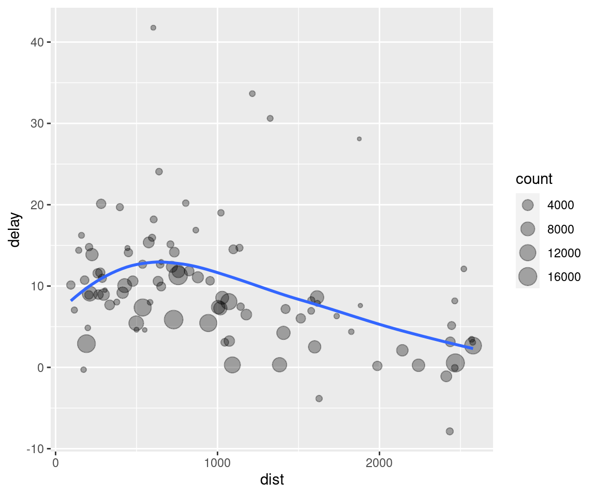

tidyverse base
Data transformation
Introduction
Visualisation is an important tool for insight generation, but it is rare that you get the data in exactly the right form you need. Often you’ll need to create some new variables or summaries, or maybe you just want to rename the variables or reorder the observations in order to make the data a little easier to work with. You’ll learn how to do all that (and more!) in this chapter, which will teach you how to transform your data using the dplyr package and a new dataset on flights departing New York City in 2013.
Prerequisites
In this chapter we’re going to focus on how to use the dplyr package, another core member of the tidyverse. We’ll illustrate the key ideas using data from the nycflights13 package, and use ggplot2 to help us understand the data.
library(nycflights13)
library(tidyverse)Take careful note of the conflicts message that’s printed when you load the tidyverse. It tells you that dplyr overwrites some functions in base R. If you want to use the base version of these functions after loading dplyr, you’ll need to use their full names: stats::filter() and stats::lag().
nycflights13
To explore the basic data manipulation verbs of dplyr, we’ll use nycflights13::flights. This data frame contains all 336,776 flights that departed from New York City in 2013. The data comes from the US Bureau of Transportation Statistics, and is documented in ?flights.
flights## # A tibble: 336,776 x 19
## year month day dep_time sched_dep_time dep_delay arr_time sched_arr_time
## <int> <int> <int> <int> <int> <dbl> <int> <int>
## 1 2013 1 1 517 515 2 830 819
## 2 2013 1 1 533 529 4 850 830
## 3 2013 1 1 542 540 2 923 850
## 4 2013 1 1 544 545 -1 1004 1022
## 5 2013 1 1 554 600 -6 812 837
## 6 2013 1 1 554 558 -4 740 728
## 7 2013 1 1 555 600 -5 913 854
## 8 2013 1 1 557 600 -3 709 723
## 9 2013 1 1 557 600 -3 838 846
## 10 2013 1 1 558 600 -2 753 745
## # … with 336,766 more rows, and 11 more variables: arr_delay <dbl>,
## # carrier <chr>, flight <int>, tailnum <chr>, origin <chr>, dest <chr>,
## # air_time <dbl>, distance <dbl>, hour <dbl>, minute <dbl>, time_hour <dttm>You might notice that this data frame prints a little differently from other data frames you might have used in the past: it only shows the first few rows and all the columns that fit on one screen. (To see the whole dataset, you can run View(flights) which will open the dataset in the RStudio viewer). It prints differently because it’s a tibble. Tibbles are data frames, but slightly tweaked to work better in the tidyverse. For now, you don’t need to worry about the differences; we’ll come back to tibbles in more detail in wrangle.
You might also have noticed the row of three (or four) letter abbreviations under the column names. These describe the type of each variable:
intstands for integers.dblstands for doubles, or real numbers.chrstands for character vectors, or strings.dttmstands for date-times (a date + a time).
There are three other common types of variables that aren’t used in this dataset but you’ll encounter later in the book:
lglstands for logical, vectors that contain onlyTRUEorFALSE.fctrstands for factors, which R uses to represent categorical variables with fixed possible values.datestands for dates.
dplyr basics
In this chapter you are going to learn the five key dplyr functions that allow you to solve the vast majority of your data manipulation challenges:
- Pick observations by their values (
filter()). - Reorder the rows (
arrange()). - Pick variables by their names (
select()). - Create new variables with functions of existing variables (
mutate()). - Collapse many values down to a single summary (
summarise()).
These can all be used in conjunction with group_by() which changes the scope of each function from operating on the entire dataset to operating on it group-by-group. These six functions provide the verbs for a language of data manipulation.
All verbs work similarly:
The first argument is a data frame.
The subsequent arguments describe what to do with the data frame, using the variable names (without quotes).
The result is a new data frame.
Together these properties make it easy to chain together multiple simple steps to achieve a complex result. Let’s dive in and see how these verbs work.
Filter rows with filter()
filter() allows you to subset observations based on their values. The first argument is the name of the data frame. The second and subsequent arguments are the expressions that filter the data frame. For example, we can select all flights on January 1st with:
filter(flights, month == 1, day == 1)## # A tibble: 842 x 19
## year month day dep_time sched_dep_time dep_delay arr_time sched_arr_time
## <int> <int> <int> <int> <int> <dbl> <int> <int>
## 1 2013 1 1 517 515 2 830 819
## 2 2013 1 1 533 529 4 850 830
## 3 2013 1 1 542 540 2 923 850
## 4 2013 1 1 544 545 -1 1004 1022
## 5 2013 1 1 554 600 -6 812 837
## 6 2013 1 1 554 558 -4 740 728
## 7 2013 1 1 555 600 -5 913 854
## 8 2013 1 1 557 600 -3 709 723
## 9 2013 1 1 557 600 -3 838 846
## 10 2013 1 1 558 600 -2 753 745
## # … with 832 more rows, and 11 more variables: arr_delay <dbl>, carrier <chr>,
## # flight <int>, tailnum <chr>, origin <chr>, dest <chr>, air_time <dbl>,
## # distance <dbl>, hour <dbl>, minute <dbl>, time_hour <dttm>When you run that line of code, dplyr executes the filtering operation and returns a new data frame. dplyr functions never modify their inputs, so if you want to save the result, you’ll need to use the assignment operator, <-:
jan1 <- filter(flights, month == 1, day == 1)R either prints out the results, or saves them to a variable. If you want to do both, you can wrap the assignment in parentheses:
(dec25 <- filter(flights, month == 12, day == 25))## # A tibble: 719 x 19
## year month day dep_time sched_dep_time dep_delay arr_time sched_arr_time
## <int> <int> <int> <int> <int> <dbl> <int> <int>
## 1 2013 12 25 456 500 -4 649 651
## 2 2013 12 25 524 515 9 805 814
## 3 2013 12 25 542 540 2 832 850
## 4 2013 12 25 546 550 -4 1022 1027
## 5 2013 12 25 556 600 -4 730 745
## 6 2013 12 25 557 600 -3 743 752
## 7 2013 12 25 557 600 -3 818 831
## 8 2013 12 25 559 600 -1 855 856
## 9 2013 12 25 559 600 -1 849 855
## 10 2013 12 25 600 600 0 850 846
## # … with 709 more rows, and 11 more variables: arr_delay <dbl>, carrier <chr>,
## # flight <int>, tailnum <chr>, origin <chr>, dest <chr>, air_time <dbl>,
## # distance <dbl>, hour <dbl>, minute <dbl>, time_hour <dttm>Comparisons
To use filtering effectively, you have to know how to select the observations that you want using the comparison operators. R provides the standard suite: >, >=, <, <=, != (not equal), and == (equal).
When you’re starting out with R, the easiest mistake to make is to use = instead of == when testing for equality. When this happens you’ll get an informative error:
filter(flights, month = 1)## Error: Problem with `filter()` input `..1`.
## x Input `..1` is named.
## ℹ This usually means that you've used `=` instead of `==`.
## ℹ Did you mean `month == 1`?There’s another common problem you might encounter when using ==: floating point numbers. These results might surprise you!
sqrt(2) ^ 2 == 2## [1] FALSE1 / 49 * 49 == 1## [1] FALSEComputers use finite precision arithmetic (they obviously can’t store an infinite number of digits!) so remember that every number you see is an approximation. Instead of relying on ==, use near():
near(sqrt(2) ^ 2, 2)## [1] TRUEnear(1 / 49 * 49, 1)## [1] TRUELogical operators
Multiple arguments to filter() are combined with “and”: every expression must be true in order for a row to be included in the output. For other types of combinations, you’ll need to use Boolean operators yourself: & is “and”, | is “or”, and ! is “not”. Figure shows the complete set of Boolean operations.

Complete set of boolean operations. x is the left-hand circle, y is the right-hand circle, and the shaded region show which parts each operator selects.
The following code finds all flights that departed in November or December:
filter(flights, month == 11 | month == 12)The order of operations doesn’t work like English. You can’t write filter(flights, month == (11 | 12)), which you might literally translate into “finds all flights that departed in November or December”. Instead it finds all months that equal 11 | 12, an expression that evaluates to TRUE. In a numeric context (like here), TRUE becomes one, so this finds all flights in January, not November or December. This is quite confusing!
A useful short-hand for this problem is x %in% y. This will select every row where x is one of the values in y. We could use it to rewrite the code above:
nov_dec <- filter(flights, month %in% c(11, 12))Sometimes you can simplify complicated subsetting by remembering De Morgan’s law: !(x & y) is the same as !x | !y, and !(x | y) is the same as !x & !y. For example, if you wanted to find flights that weren’t delayed (on arrival or departure) by more than two hours, you could use either of the following two filters:
filter(flights, !(arr_delay > 120 | dep_delay > 120))
filter(flights, arr_delay <= 120, dep_delay <= 120)As well as & and |, R also has && and ||. Don’t use them here! You’ll learn when you should use them in [conditional execution].
Whenever you start using complicated, multipart expressions in filter(), consider making them explicit variables instead. That makes it much easier to check your work. You’ll learn how to create new variables shortly.
Missing values
One important feature of R that can make comparison tricky are missing values, or NAs (“not availables”). NA represents an unknown value so missing values are “contagious”: almost any operation involving an unknown value will also be unknown.
NA > 5## [1] NA10 == NA## [1] NANA + 10## [1] NANA / 2## [1] NAThe most confusing result is this one:
NA == NA## [1] NAIt’s easiest to understand why this is true with a bit more context:
# Let x be Mary's age. We don't know how old she is.
x <- NA
# Let y be John's age. We don't know how old he is.
y <- NA
# Are John and Mary the same age?
x == y## [1] NA# We don't know!If you want to determine if a value is missing, use is.na():
is.na(x)## [1] TRUEfilter() only includes rows where the condition is TRUE; it excludes both FALSE and NA values. If you want to preserve missing values, ask for them explicitly:
df <- tibble(x = c(1, NA, 3))
filter(df, x > 1)## # A tibble: 1 x 1
## x
## <dbl>
## 1 3filter(df, is.na(x) | x > 1)## # A tibble: 2 x 1
## x
## <dbl>
## 1 NA
## 2 3Exercises
Find all flights that
- Had an arrival delay of two or more hours
- Flew to Houston (
IAHorHOU) - Were operated by United, American, or Delta
- Departed in summer (July, August, and September)
- Arrived more than two hours late, but didn’t leave late
- Were delayed by at least an hour, but made up over 30 minutes in flight
- Departed between midnight and 6am (inclusive)
Another useful dplyr filtering helper is
between(). What does it do? Can you use it to simplify the code needed to answer the previous challenges?How many flights have a missing
dep_time? What other variables are missing? What might these rows represent?Why is
NA ^ 0not missing? Why isNA | TRUEnot missing? Why isFALSE & NAnot missing? Can you figure out the general rule? (NA * 0is a tricky counterexample!)
Arrange rows with arrange()
arrange() works similarly to filter() except that instead of selecting rows, it changes their order. It takes a data frame and a set of column names (or more complicated expressions) to order by. If you provide more than one column name, each additional column will be used to break ties in the values of preceding columns:
arrange(flights, year, month, day)## # A tibble: 336,776 x 19
## year month day dep_time sched_dep_time dep_delay arr_time sched_arr_time
## <int> <int> <int> <int> <int> <dbl> <int> <int>
## 1 2013 1 1 517 515 2 830 819
## 2 2013 1 1 533 529 4 850 830
## 3 2013 1 1 542 540 2 923 850
## 4 2013 1 1 544 545 -1 1004 1022
## 5 2013 1 1 554 600 -6 812 837
## 6 2013 1 1 554 558 -4 740 728
## 7 2013 1 1 555 600 -5 913 854
## 8 2013 1 1 557 600 -3 709 723
## 9 2013 1 1 557 600 -3 838 846
## 10 2013 1 1 558 600 -2 753 745
## # … with 336,766 more rows, and 11 more variables: arr_delay <dbl>,
## # carrier <chr>, flight <int>, tailnum <chr>, origin <chr>, dest <chr>,
## # air_time <dbl>, distance <dbl>, hour <dbl>, minute <dbl>, time_hour <dttm>Use desc() to re-order by a column in descending order:
arrange(flights, desc(dep_delay))## # A tibble: 336,776 x 19
## year month day dep_time sched_dep_time dep_delay arr_time sched_arr_time
## <int> <int> <int> <int> <int> <dbl> <int> <int>
## 1 2013 1 9 641 900 1301 1242 1530
## 2 2013 6 15 1432 1935 1137 1607 2120
## 3 2013 1 10 1121 1635 1126 1239 1810
## 4 2013 9 20 1139 1845 1014 1457 2210
## 5 2013 7 22 845 1600 1005 1044 1815
## 6 2013 4 10 1100 1900 960 1342 2211
## 7 2013 3 17 2321 810 911 135 1020
## 8 2013 6 27 959 1900 899 1236 2226
## 9 2013 7 22 2257 759 898 121 1026
## 10 2013 12 5 756 1700 896 1058 2020
## # … with 336,766 more rows, and 11 more variables: arr_delay <dbl>,
## # carrier <chr>, flight <int>, tailnum <chr>, origin <chr>, dest <chr>,
## # air_time <dbl>, distance <dbl>, hour <dbl>, minute <dbl>, time_hour <dttm>Missing values are always sorted at the end:
df <- tibble(x = c(5, 2, NA))
arrange(df, x)## # A tibble: 3 x 1
## x
## <dbl>
## 1 2
## 2 5
## 3 NAarrange(df, desc(x))## # A tibble: 3 x 1
## x
## <dbl>
## 1 5
## 2 2
## 3 NAExercises
How could you use
arrange()to sort all missing values to the start? (Hint: useis.na()).Sort
flightsto find the most delayed flights. Find the flights that left earliest.Sort
flightsto find the fastest (highest speed) flights.Which flights travelled the farthest? Which travelled the shortest?
Select columns with select()
It’s not uncommon to get datasets with hundreds or even thousands of variables. In this case, the first challenge is often narrowing in on the variables you’re actually interested in. select() allows you to rapidly zoom in on a useful subset using operations based on the names of the variables.
select() is not terribly useful with the flights data because we only have 19 variables, but you can still get the general idea:
# Select columns by name
select(flights, year, month, day)## # A tibble: 336,776 x 3
## year month day
## <int> <int> <int>
## 1 2013 1 1
## 2 2013 1 1
## 3 2013 1 1
## 4 2013 1 1
## 5 2013 1 1
## 6 2013 1 1
## 7 2013 1 1
## 8 2013 1 1
## 9 2013 1 1
## 10 2013 1 1
## # … with 336,766 more rows# Select all columns between year and day (inclusive)
select(flights, year:day)## # A tibble: 336,776 x 3
## year month day
## <int> <int> <int>
## 1 2013 1 1
## 2 2013 1 1
## 3 2013 1 1
## 4 2013 1 1
## 5 2013 1 1
## 6 2013 1 1
## 7 2013 1 1
## 8 2013 1 1
## 9 2013 1 1
## 10 2013 1 1
## # … with 336,766 more rows# Select all columns except those from year to day (inclusive)
select(flights, -(year:day))## # A tibble: 336,776 x 16
## dep_time sched_dep_time dep_delay arr_time sched_arr_time arr_delay carrier
## <int> <int> <dbl> <int> <int> <dbl> <chr>
## 1 517 515 2 830 819 11 UA
## 2 533 529 4 850 830 20 UA
## 3 542 540 2 923 850 33 AA
## 4 544 545 -1 1004 1022 -18 B6
## 5 554 600 -6 812 837 -25 DL
## 6 554 558 -4 740 728 12 UA
## 7 555 600 -5 913 854 19 B6
## 8 557 600 -3 709 723 -14 EV
## 9 557 600 -3 838 846 -8 B6
## 10 558 600 -2 753 745 8 AA
## # … with 336,766 more rows, and 9 more variables: flight <int>, tailnum <chr>,
## # origin <chr>, dest <chr>, air_time <dbl>, distance <dbl>, hour <dbl>,
## # minute <dbl>, time_hour <dttm>There are a number of helper functions you can use within select():
starts_with("abc"): matches names that begin with “abc”.ends_with("xyz"): matches names that end with “xyz”.contains("ijk"): matches names that contain “ijk”.matches("(.)\\1"): selects variables that match a regular expression. This one matches any variables that contain repeated characters. You’ll learn more about regular expressions in [strings].num_range("x", 1:3): matchesx1,x2andx3.
See ?select for more details.
select() can be used to rename variables, but it’s rarely useful because it drops all of the variables not explicitly mentioned. Instead, use rename(), which is a variant of select() that keeps all the variables that aren’t explicitly mentioned:
rename(flights, tail_num = tailnum)## # A tibble: 336,776 x 19
## year month day dep_time sched_dep_time dep_delay arr_time sched_arr_time
## <int> <int> <int> <int> <int> <dbl> <int> <int>
## 1 2013 1 1 517 515 2 830 819
## 2 2013 1 1 533 529 4 850 830
## 3 2013 1 1 542 540 2 923 850
## 4 2013 1 1 544 545 -1 1004 1022
## 5 2013 1 1 554 600 -6 812 837
## 6 2013 1 1 554 558 -4 740 728
## 7 2013 1 1 555 600 -5 913 854
## 8 2013 1 1 557 600 -3 709 723
## 9 2013 1 1 557 600 -3 838 846
## 10 2013 1 1 558 600 -2 753 745
## # … with 336,766 more rows, and 11 more variables: arr_delay <dbl>,
## # carrier <chr>, flight <int>, tail_num <chr>, origin <chr>, dest <chr>,
## # air_time <dbl>, distance <dbl>, hour <dbl>, minute <dbl>, time_hour <dttm>Another option is to use select() in conjunction with the everything() helper. This is useful if you have a handful of variables you’d like to move to the start of the data frame.
select(flights, time_hour, air_time, everything())## # A tibble: 336,776 x 19
## time_hour air_time year month day dep_time sched_dep_time
## <dttm> <dbl> <int> <int> <int> <int> <int>
## 1 2013-01-01 05:00:00 227 2013 1 1 517 515
## 2 2013-01-01 05:00:00 227 2013 1 1 533 529
## 3 2013-01-01 05:00:00 160 2013 1 1 542 540
## 4 2013-01-01 05:00:00 183 2013 1 1 544 545
## 5 2013-01-01 06:00:00 116 2013 1 1 554 600
## 6 2013-01-01 05:00:00 150 2013 1 1 554 558
## 7 2013-01-01 06:00:00 158 2013 1 1 555 600
## 8 2013-01-01 06:00:00 53 2013 1 1 557 600
## 9 2013-01-01 06:00:00 140 2013 1 1 557 600
## 10 2013-01-01 06:00:00 138 2013 1 1 558 600
## # … with 336,766 more rows, and 12 more variables: dep_delay <dbl>,
## # arr_time <int>, sched_arr_time <int>, arr_delay <dbl>, carrier <chr>,
## # flight <int>, tailnum <chr>, origin <chr>, dest <chr>, distance <dbl>,
## # hour <dbl>, minute <dbl>Exercises
Brainstorm as many ways as possible to select
dep_time,dep_delay,arr_time, andarr_delayfromflights.What happens if you include the name of a variable multiple times in a
select()call?What does the
one_of()function do? Why might it be helpful in conjunction with this vector?vars <- c("year", "month", "day", "dep_delay", "arr_delay")Does the result of running the following code surprise you? How do the select helpers deal with case by default? How can you change that default?
select(flights, contains("TIME"))
Add new variables with mutate()
Besides selecting sets of existing columns, it’s often useful to add new columns that are functions of existing columns. That’s the job of mutate().
mutate() always adds new columns at the end of your dataset so we’ll start by creating a narrower dataset so we can see the new variables. Remember that when you’re in RStudio, the easiest way to see all the columns is View().
flights_sml <- select(flights,
year:day,
ends_with("delay"),
distance,
air_time
)
mutate(flights_sml,
gain = dep_delay - arr_delay,
speed = distance / air_time * 60
)## # A tibble: 336,776 x 9
## year month day dep_delay arr_delay distance air_time gain speed
## <int> <int> <int> <dbl> <dbl> <dbl> <dbl> <dbl> <dbl>
## 1 2013 1 1 2 11 1400 227 -9 370.
## 2 2013 1 1 4 20 1416 227 -16 374.
## 3 2013 1 1 2 33 1089 160 -31 408.
## 4 2013 1 1 -1 -18 1576 183 17 517.
## 5 2013 1 1 -6 -25 762 116 19 394.
## 6 2013 1 1 -4 12 719 150 -16 288.
## 7 2013 1 1 -5 19 1065 158 -24 404.
## 8 2013 1 1 -3 -14 229 53 11 259.
## 9 2013 1 1 -3 -8 944 140 5 405.
## 10 2013 1 1 -2 8 733 138 -10 319.
## # … with 336,766 more rowsNote that you can refer to columns that you’ve just created:
mutate(flights_sml,
gain = dep_delay - arr_delay,
hours = air_time / 60,
gain_per_hour = gain / hours
)## # A tibble: 336,776 x 10
## year month day dep_delay arr_delay distance air_time gain hours
## <int> <int> <int> <dbl> <dbl> <dbl> <dbl> <dbl> <dbl>
## 1 2013 1 1 2 11 1400 227 -9 3.78
## 2 2013 1 1 4 20 1416 227 -16 3.78
## 3 2013 1 1 2 33 1089 160 -31 2.67
## 4 2013 1 1 -1 -18 1576 183 17 3.05
## 5 2013 1 1 -6 -25 762 116 19 1.93
## 6 2013 1 1 -4 12 719 150 -16 2.5
## 7 2013 1 1 -5 19 1065 158 -24 2.63
## 8 2013 1 1 -3 -14 229 53 11 0.883
## 9 2013 1 1 -3 -8 944 140 5 2.33
## 10 2013 1 1 -2 8 733 138 -10 2.3
## # … with 336,766 more rows, and 1 more variable: gain_per_hour <dbl>If you only want to keep the new variables, use transmute():
transmute(flights,
gain = dep_delay - arr_delay,
hours = air_time / 60,
gain_per_hour = gain / hours
)## # A tibble: 336,776 x 3
## gain hours gain_per_hour
## <dbl> <dbl> <dbl>
## 1 -9 3.78 -2.38
## 2 -16 3.78 -4.23
## 3 -31 2.67 -11.6
## 4 17 3.05 5.57
## 5 19 1.93 9.83
## 6 -16 2.5 -6.4
## 7 -24 2.63 -9.11
## 8 11 0.883 12.5
## 9 5 2.33 2.14
## 10 -10 2.3 -4.35
## # … with 336,766 more rowsUseful creation functions
There are many functions for creating new variables that you can use with mutate(). The key property is that the function must be vectorised: it must take a vector of values as input, return a vector with the same number of values as output. There’s no way to list every possible function that you might use, but here’s a selection of functions that are frequently useful:
Arithmetic operators:
+,-,*,/,^. These are all vectorised, using the so called “recycling rules”. If one parameter is shorter than the other, it will be automatically extended to be the same length. This is most useful when one of the arguments is a single number:air_time / 60,hours * 60 + minute, etc.Arithmetic operators are also useful in conjunction with the aggregate functions you’ll learn about later. For example,
x / sum(x)calculates the proportion of a total, andy - mean(y)computes the difference from the mean.Modular arithmetic:
%/%(integer division) and%%(remainder), wherex == y * (x %/% y) + (x %% y). Modular arithmetic is a handy tool because it allows you to break integers up into pieces. For example, in the flights dataset, you can computehourandminutefromdep_timewith:transmute(flights, dep_time, hour = dep_time %/% 100, minute = dep_time %% 100 )## # A tibble: 336,776 x 3 ## dep_time hour minute ## <int> <dbl> <dbl> ## 1 517 5 17 ## 2 533 5 33 ## 3 542 5 42 ## 4 544 5 44 ## 5 554 5 54 ## 6 554 5 54 ## 7 555 5 55 ## 8 557 5 57 ## 9 557 5 57 ## 10 558 5 58 ## # … with 336,766 more rowsLogs:
log(),log2(),log10(). Logarithms are an incredibly useful transformation for dealing with data that ranges across multiple orders of magnitude. They also convert multiplicative relationships to additive, a feature we’ll come back to in modelling.All else being equal, I recommend using
log2()because it’s easy to interpret: a difference of 1 on the log scale corresponds to doubling on the original scale and a difference of -1 corresponds to halving.Offsets:
lead()andlag()allow you to refer to leading or lagging values. This allows you to compute running differences (e.g.x - lag(x)) or find when values change (x != lag(x)). They are most useful in conjunction withgroup_by(), which you’ll learn about shortly.(x <- 1:10)## [1] 1 2 3 4 5 6 7 8 9 10lag(x)## [1] NA 1 2 3 4 5 6 7 8 9lead(x)## [1] 2 3 4 5 6 7 8 9 10 NACumulative and rolling aggregates: R provides functions for running sums, products, mins and maxes:
cumsum(),cumprod(),cummin(),cummax(); and dplyr providescummean()for cumulative means. If you need rolling aggregates (i.e. a sum computed over a rolling window), try the RcppRoll package.x## [1] 1 2 3 4 5 6 7 8 9 10cumsum(x)## [1] 1 3 6 10 15 21 28 36 45 55cummean(x)## [1] 1.0 1.5 2.0 2.5 3.0 3.5 4.0 4.5 5.0 5.5Logical comparisons,
<,<=,>,>=,!=, and==, which you learned about earlier. If you’re doing a complex sequence of logical operations it’s often a good idea to store the interim values in new variables so you can check that each step is working as expected.Ranking: there are a number of ranking functions, but you should start with
min_rank(). It does the most usual type of ranking (e.g. 1st, 2nd, 2nd, 4th). The default gives smallest values the small ranks; usedesc(x)to give the largest values the smallest ranks.y <- c(1, 2, 2, NA, 3, 4) min_rank(y)## [1] 1 2 2 NA 4 5min_rank(desc(y))## [1] 5 3 3 NA 2 1If
min_rank()doesn’t do what you need, look at the variantsrow_number(),dense_rank(),percent_rank(),cume_dist(),ntile(). See their help pages for more details.row_number(y)## [1] 1 2 3 NA 4 5dense_rank(y)## [1] 1 2 2 NA 3 4percent_rank(y)## [1] 0.00 0.25 0.25 NA 0.75 1.00cume_dist(y)## [1] 0.2 0.6 0.6 NA 0.8 1.0
Exercises
Currently
dep_timeandsched_dep_timeare convenient to look at, but hard to compute with because they’re not really continuous numbers. Convert them to a more convenient representation of number of minutes since midnight.Compare
air_timewitharr_time - dep_time. What do you expect to see? What do you see? What do you need to do to fix it?Compare
dep_time,sched_dep_time, anddep_delay. How would you expect those three numbers to be related?Find the 10 most delayed flights using a ranking function. How do you want to handle ties? Carefully read the documentation for
min_rank().What does
1:3 + 1:10return? Why?What trigonometric functions does R provide?
Grouped summaries with summarise()
The last key verb is summarise(). It collapses a data frame to a single row:
summarise(flights, delay = mean(dep_delay, na.rm = TRUE))## # A tibble: 1 x 1
## delay
## <dbl>
## 1 12.6(We’ll come back to what that na.rm = TRUE means very shortly.)
summarise() is not terribly useful unless we pair it with group_by(). This changes the unit of analysis from the complete dataset to individual groups. Then, when you use the dplyr verbs on a grouped data frame they’ll be automatically applied “by group”. For example, if we applied exactly the same code to a data frame grouped by date, we get the average delay per date:
by_day <- group_by(flights, year, month, day)
summarise(by_day, delay = mean(dep_delay, na.rm = TRUE))## `summarise()` has grouped output by 'year', 'month'. You can override using the `.groups` argument.## # A tibble: 365 x 4
## # Groups: year, month [12]
## year month day delay
## <int> <int> <int> <dbl>
## 1 2013 1 1 11.5
## 2 2013 1 2 13.9
## 3 2013 1 3 11.0
## 4 2013 1 4 8.95
## 5 2013 1 5 5.73
## 6 2013 1 6 7.15
## 7 2013 1 7 5.42
## 8 2013 1 8 2.55
## 9 2013 1 9 2.28
## 10 2013 1 10 2.84
## # … with 355 more rowsTogether group_by() and summarise() provide one of the tools that you’ll use most commonly when working with dplyr: grouped summaries. But before we go any further with this, we need to introduce a powerful new idea: the pipe.
Combining multiple operations with the pipe
Imagine that we want to explore the relationship between the distance and average delay for each location. Using what you know about dplyr, you might write code like this:
by_dest <- group_by(flights, dest)
delay <- summarise(by_dest,
count = n(),
dist = mean(distance, na.rm = TRUE),
delay = mean(arr_delay, na.rm = TRUE)
)
delay <- filter(delay, count > 20, dest != "HNL")
# It looks like delays increase with distance up to ~750 miles
# and then decrease. Maybe as flights get longer there's more
# ability to make up delays in the air?
ggplot(data = delay, mapping = aes(x = dist, y = delay)) +
geom_point(aes(size = count), alpha = 1/3) +
geom_smooth(se = FALSE)## `geom_smooth()` using method = 'loess' and formula 'y ~ x'
There are three steps to prepare this data:
Group flights by destination.
Summarise to compute distance, average delay, and number of flights.
Filter to remove noisy points and Honolulu airport, which is almost twice as far away as the next closest airport.
This code is a little frustrating to write because we have to give each intermediate data frame a name, even though we don’t care about it. Naming things is hard, so this slows down our analysis.
There’s another way to tackle the same problem with the pipe, %>%:
delays <- flights %>%
group_by(dest) %>%
summarise(
count = n(),
dist = mean(distance, na.rm = TRUE),
delay = mean(arr_delay, na.rm = TRUE)
) %>%
filter(count > 20, dest != "HNL")This focuses on the transformations, not what’s being transformed, which makes the code easier to read. You can read it as a series of imperative statements: group, then summarise, then filter. As suggested by this reading, a good way to pronounce %>% when reading code is “then”.
Behind the scenes, x %>% f(y) turns into f(x, y), and x %>% f(y) %>% g(z) turns into g(f(x, y), z) and so on. You can use the pipe to rewrite multiple operations in a way that you can read left-to-right, top-to-bottom. We’ll use piping frequently from now on because it considerably improves the readability of code, and we’ll come back to it in more detail in [pipes].
Working with the pipe is one of the key criteria for belonging to the tidyverse. The only exception is ggplot2: it was written before the pipe was discovered. Unfortunately, the next iteration of ggplot2, ggvis, which does use the pipe, isn’t quite ready for prime time yet.
Missing values
You may have wondered about the na.rm argument we used above. What happens if we don’t set it?
flights %>%
group_by(year, month, day) %>%
summarise(mean = mean(dep_delay))## `summarise()` has grouped output by 'year', 'month'. You can override using the `.groups` argument.## # A tibble: 365 x 4
## # Groups: year, month [12]
## year month day mean
## <int> <int> <int> <dbl>
## 1 2013 1 1 NA
## 2 2013 1 2 NA
## 3 2013 1 3 NA
## 4 2013 1 4 NA
## 5 2013 1 5 NA
## 6 2013 1 6 NA
## 7 2013 1 7 NA
## 8 2013 1 8 NA
## 9 2013 1 9 NA
## 10 2013 1 10 NA
## # … with 355 more rowsWe get a lot of missing values! That’s because aggregation functions obey the usual rule of missing values: if there’s any missing value in the input, the output will be a missing value. Fortunately, all aggregation functions have an na.rm argument which removes the missing values prior to computation:
flights %>%
group_by(year, month, day) %>%
summarise(mean = mean(dep_delay, na.rm = TRUE))## `summarise()` has grouped output by 'year', 'month'. You can override using the `.groups` argument.## # A tibble: 365 x 4
## # Groups: year, month [12]
## year month day mean
## <int> <int> <int> <dbl>
## 1 2013 1 1 11.5
## 2 2013 1 2 13.9
## 3 2013 1 3 11.0
## 4 2013 1 4 8.95
## 5 2013 1 5 5.73
## 6 2013 1 6 7.15
## 7 2013 1 7 5.42
## 8 2013 1 8 2.55
## 9 2013 1 9 2.28
## 10 2013 1 10 2.84
## # … with 355 more rowsIn this case, where missing values represent cancelled flights, we could also tackle the problem by first removing the cancelled flights. We’ll save this dataset so we can reuse it in the next few examples.
not_cancelled <- flights %>%
filter(!is.na(dep_delay), !is.na(arr_delay))
not_cancelled %>%
group_by(year, month, day) %>%
summarise(mean = mean(dep_delay))## `summarise()` has grouped output by 'year', 'month'. You can override using the `.groups` argument.## # A tibble: 365 x 4
## # Groups: year, month [12]
## year month day mean
## <int> <int> <int> <dbl>
## 1 2013 1 1 11.4
## 2 2013 1 2 13.7
## 3 2013 1 3 10.9
## 4 2013 1 4 8.97
## 5 2013 1 5 5.73
## 6 2013 1 6 7.15
## 7 2013 1 7 5.42
## 8 2013 1 8 2.56
## 9 2013 1 9 2.30
## 10 2013 1 10 2.84
## # … with 355 more rowsCounts
Whenever you do any aggregation, it’s always a good idea to include either a count (n()), or a count of non-missing values (sum(!is.na(x))). That way you can check that you’re not drawing conclusions based on very small amounts of data. For example, let’s look at the planes (identified by their tail number) that have the highest average delays:
delays <- not_cancelled %>%
group_by(tailnum) %>%
summarise(
delay = mean(arr_delay)
)
ggplot(data = delays, mapping = aes(x = delay)) +
geom_freqpoly(binwidth = 10)Wow, there are some planes that have an average delay of 5 hours (300 minutes)!
The story is actually a little more nuanced. We can get more insight if we draw a scatterplot of number of flights vs. average delay:
delays <- not_cancelled %>%
group_by(tailnum) %>%
summarise(
delay = mean(arr_delay, na.rm = TRUE),
n = n()
)
ggplot(data = delays, mapping = aes(x = n, y = delay)) +
geom_point(alpha = 1/10)Not surprisingly, there is much greater variation in the average delay when there are few flights. The shape of this plot is very characteristic: whenever you plot a mean (or other summary) vs. group size, you’ll see that the variation decreases as the sample size increases.
When looking at this sort of plot, it’s often useful to filter out the groups with the smallest numbers of observations, so you can see more of the pattern and less of the extreme variation in the smallest groups. This is what the following code does, as well as showing you a handy pattern for integrating ggplot2 into dplyr flows. It’s a bit painful that you have to switch from %>% to +, but once you get the hang of it, it’s quite convenient.
delays %>%
filter(n > 25) %>%
ggplot(mapping = aes(x = n, y = delay)) +
geom_point(alpha = 1/10)RStudio tip: a useful keyboard shortcut is Cmd/Ctrl + Shift + P. This resends the previously sent chunk from the editor to the console. This is very convenient when you’re (e.g.) exploring the value of n in the example above. You send the whole block once with Cmd/Ctrl + Enter, then you modify the value of n and press Cmd/Ctrl + Shift + P to resend the complete block.
There’s another common variation of this type of pattern. Let’s look at how the average performance of batters in baseball is related to the number of times they’re at bat. Here I use data from the Lahman package to compute the batting average (number of hits / number of attempts) of every major league baseball player.
When I plot the skill of the batter (measured by the batting average, ba) against the number of opportunities to hit the ball (measured by at bat, ab), you see two patterns:
As above, the variation in our aggregate decreases as we get more data points.
There’s a positive correlation between skill (
ba) and opportunities to hit the ball (ab). This is because teams control who gets to play, and obviously they’ll pick their best players.
# Convert to a tibble so it prints nicely
batting <- as_tibble(Lahman::Batting)
batters <- batting %>%
group_by(playerID) %>%
summarise(
ba = sum(H, na.rm = TRUE) / sum(AB, na.rm = TRUE),
ab = sum(AB, na.rm = TRUE)
)
batters %>%
filter(ab > 100) %>%
ggplot(mapping = aes(x = ab, y = ba)) +
geom_point() +
geom_smooth(se = FALSE)## `geom_smooth()` using method = 'gam' and formula 'y ~ s(x, bs = "cs")'This also has important implications for ranking. If you naively sort on desc(ba), the people with the best batting averages are clearly lucky, not skilled:
batters %>%
arrange(desc(ba))## # A tibble: 19,898 x 3
## playerID ba ab
## <chr> <dbl> <int>
## 1 abramge01 1 1
## 2 alanirj01 1 1
## 3 alberan01 1 1
## 4 banisje01 1 1
## 5 bartocl01 1 1
## 6 bassdo01 1 1
## 7 birasst01 1 2
## 8 bruneju01 1 1
## 9 burnscb01 1 1
## 10 cammaer01 1 1
## # … with 19,888 more rowsYou can find a good explanation of this problem at http://varianceexplained.org/r/empirical_bayes_baseball/ and http://www.evanmiller.org/how-not-to-sort-by-average-rating.html.
Useful summary functions
Just using means, counts, and sum can get you a long way, but R provides many other useful summary functions:
Measures of location: we’ve used
mean(x), butmedian(x)is also useful. The mean is the sum divided by the length; the median is a value where 50% ofxis above it, and 50% is below it.It’s sometimes useful to combine aggregation with logical subsetting. We haven’t talked about this sort of subsetting yet, but you’ll learn more about it in subsetting.
not_cancelled %>% group_by(year, month, day) %>% summarise( avg_delay1 = mean(arr_delay), avg_delay2 = mean(arr_delay[arr_delay > 0]) # the average positive delay )## `summarise()` has grouped output by 'year', 'month'. You can override using the `.groups` argument.## # A tibble: 365 x 5 ## # Groups: year, month [12] ## year month day avg_delay1 avg_delay2 ## <int> <int> <int> <dbl> <dbl> ## 1 2013 1 1 12.7 32.5 ## 2 2013 1 2 12.7 32.0 ## 3 2013 1 3 5.73 27.7 ## 4 2013 1 4 -1.93 28.3 ## 5 2013 1 5 -1.53 22.6 ## 6 2013 1 6 4.24 24.4 ## 7 2013 1 7 -4.95 27.8 ## 8 2013 1 8 -3.23 20.8 ## 9 2013 1 9 -0.264 25.6 ## 10 2013 1 10 -5.90 27.3 ## # … with 355 more rowsMeasures of spread:
sd(x),IQR(x),mad(x). The root mean squared deviation, or standard deviationsd(x), is the standard measure of spread. The interquartile rangeIQR(x)and median absolute deviationmad(x)are robust equivalents that may be more useful if you have outliers.# Why is distance to some destinations more variable than to others? not_cancelled %>% group_by(dest) %>% summarise(distance_sd = sd(distance)) %>% arrange(desc(distance_sd))## # A tibble: 104 x 2 ## dest distance_sd ## <chr> <dbl> ## 1 EGE 10.5 ## 2 SAN 10.4 ## 3 SFO 10.2 ## 4 HNL 10.0 ## 5 SEA 9.98 ## 6 LAS 9.91 ## 7 PDX 9.87 ## 8 PHX 9.86 ## 9 LAX 9.66 ## 10 IND 9.46 ## # … with 94 more rowsMeasures of rank:
min(x),quantile(x, 0.25),max(x). Quantiles are a generalisation of the median. For example,quantile(x, 0.25)will find a value ofxthat is greater than 25% of the values, and less than the remaining 75%.# When do the first and last flights leave each day? not_cancelled %>% group_by(year, month, day) %>% summarise( first = min(dep_time), last = max(dep_time) )## `summarise()` has grouped output by 'year', 'month'. You can override using the `.groups` argument.## # A tibble: 365 x 5 ## # Groups: year, month [12] ## year month day first last ## <int> <int> <int> <int> <int> ## 1 2013 1 1 517 2356 ## 2 2013 1 2 42 2354 ## 3 2013 1 3 32 2349 ## 4 2013 1 4 25 2358 ## 5 2013 1 5 14 2357 ## 6 2013 1 6 16 2355 ## 7 2013 1 7 49 2359 ## 8 2013 1 8 454 2351 ## 9 2013 1 9 2 2252 ## 10 2013 1 10 3 2320 ## # … with 355 more rowsMeasures of position:
first(x),nth(x, 2),last(x). These work similarly tox[1],x[2], andx[length(x)]but let you set a default value if that position does not exist (i.e. you’re trying to get the 3rd element from a group that only has two elements). For example, we can find the first and last departure for each day:not_cancelled %>% group_by(year, month, day) %>% summarise( first_dep = first(dep_time), last_dep = last(dep_time) )## `summarise()` has grouped output by 'year', 'month'. You can override using the `.groups` argument.## # A tibble: 365 x 5 ## # Groups: year, month [12] ## year month day first_dep last_dep ## <int> <int> <int> <int> <int> ## 1 2013 1 1 517 2356 ## 2 2013 1 2 42 2354 ## 3 2013 1 3 32 2349 ## 4 2013 1 4 25 2358 ## 5 2013 1 5 14 2357 ## 6 2013 1 6 16 2355 ## 7 2013 1 7 49 2359 ## 8 2013 1 8 454 2351 ## 9 2013 1 9 2 2252 ## 10 2013 1 10 3 2320 ## # … with 355 more rowsThese functions are complementary to filtering on ranks. Filtering gives you all variables, with each observation in a separate row:
not_cancelled %>% group_by(year, month, day) %>% mutate(r = min_rank(desc(dep_time))) %>% filter(r %in% range(r))## # A tibble: 770 x 20 ## # Groups: year, month, day [365] ## year month day dep_time sched_dep_time dep_delay arr_time sched_arr_time ## <int> <int> <int> <int> <int> <dbl> <int> <int> ## 1 2013 1 1 517 515 2 830 819 ## 2 2013 1 1 2356 2359 -3 425 437 ## 3 2013 1 2 42 2359 43 518 442 ## 4 2013 1 2 2354 2359 -5 413 437 ## 5 2013 1 3 32 2359 33 504 442 ## 6 2013 1 3 2349 2359 -10 434 445 ## 7 2013 1 4 25 2359 26 505 442 ## 8 2013 1 4 2358 2359 -1 429 437 ## 9 2013 1 4 2358 2359 -1 436 445 ## 10 2013 1 5 14 2359 15 503 445 ## # … with 760 more rows, and 12 more variables: arr_delay <dbl>, carrier <chr>, ## # flight <int>, tailnum <chr>, origin <chr>, dest <chr>, air_time <dbl>, ## # distance <dbl>, hour <dbl>, minute <dbl>, time_hour <dttm>, r <int>Counts: You’ve seen
n(), which takes no arguments, and returns the size of the current group. To count the number of non-missing values, usesum(!is.na(x)). To count the number of distinct (unique) values, usen_distinct(x).# Which destinations have the most carriers? not_cancelled %>% group_by(dest) %>% summarise(carriers = n_distinct(carrier)) %>% arrange(desc(carriers))## # A tibble: 104 x 2 ## dest carriers ## <chr> <int> ## 1 ATL 7 ## 2 BOS 7 ## 3 CLT 7 ## 4 ORD 7 ## 5 TPA 7 ## 6 AUS 6 ## 7 DCA 6 ## 8 DTW 6 ## 9 IAD 6 ## 10 MSP 6 ## # … with 94 more rowsCounts are so useful that dplyr provides a simple helper if all you want is a count:
not_cancelled %>% count(dest)## # A tibble: 104 x 2 ## dest n ## <chr> <int> ## 1 ABQ 254 ## 2 ACK 264 ## 3 ALB 418 ## 4 ANC 8 ## 5 ATL 16837 ## 6 AUS 2411 ## 7 AVL 261 ## 8 BDL 412 ## 9 BGR 358 ## 10 BHM 269 ## # … with 94 more rowsYou can optionally provide a weight variable. For example, you could use this to “count” (sum) the total number of miles a plane flew:
not_cancelled %>% count(tailnum, wt = distance)## # A tibble: 4,037 x 2 ## tailnum n ## <chr> <dbl> ## 1 D942DN 3418 ## 2 N0EGMQ 239143 ## 3 N10156 109664 ## 4 N102UW 25722 ## 5 N103US 24619 ## 6 N104UW 24616 ## 7 N10575 139903 ## 8 N105UW 23618 ## 9 N107US 21677 ## 10 N108UW 32070 ## # … with 4,027 more rowsCounts and proportions of logical values:
sum(x > 10),mean(y == 0). When used with numeric functions,TRUEis converted to 1 andFALSEto 0. This makessum()andmean()very useful:sum(x)gives the number ofTRUEs inx, andmean(x)gives the proportion.# How many flights left before 5am? (these usually indicate delayed # flights from the previous day) not_cancelled %>% group_by(year, month, day) %>% summarise(n_early = sum(dep_time < 500))## `summarise()` has grouped output by 'year', 'month'. You can override using the `.groups` argument.## # A tibble: 365 x 4 ## # Groups: year, month [12] ## year month day n_early ## <int> <int> <int> <int> ## 1 2013 1 1 0 ## 2 2013 1 2 3 ## 3 2013 1 3 4 ## 4 2013 1 4 3 ## 5 2013 1 5 3 ## 6 2013 1 6 2 ## 7 2013 1 7 2 ## 8 2013 1 8 1 ## 9 2013 1 9 3 ## 10 2013 1 10 3 ## # … with 355 more rows# What proportion of flights are delayed by more than an hour? not_cancelled %>% group_by(year, month, day) %>% summarise(hour_prop = mean(arr_delay > 60))## `summarise()` has grouped output by 'year', 'month'. You can override using the `.groups` argument.## # A tibble: 365 x 4 ## # Groups: year, month [12] ## year month day hour_prop ## <int> <int> <int> <dbl> ## 1 2013 1 1 0.0722 ## 2 2013 1 2 0.0851 ## 3 2013 1 3 0.0567 ## 4 2013 1 4 0.0396 ## 5 2013 1 5 0.0349 ## 6 2013 1 6 0.0470 ## 7 2013 1 7 0.0333 ## 8 2013 1 8 0.0213 ## 9 2013 1 9 0.0202 ## 10 2013 1 10 0.0183 ## # … with 355 more rows
Grouping by multiple variables
When you group by multiple variables, each summary peels off one level of the grouping. That makes it easy to progressively roll up a dataset:
daily <- group_by(flights, year, month, day)
(per_day <- summarise(daily, flights = n()))## `summarise()` has grouped output by 'year', 'month'. You can override using the `.groups` argument.## # A tibble: 365 x 4
## # Groups: year, month [12]
## year month day flights
## <int> <int> <int> <int>
## 1 2013 1 1 842
## 2 2013 1 2 943
## 3 2013 1 3 914
## 4 2013 1 4 915
## 5 2013 1 5 720
## 6 2013 1 6 832
## 7 2013 1 7 933
## 8 2013 1 8 899
## 9 2013 1 9 902
## 10 2013 1 10 932
## # … with 355 more rows(per_month <- summarise(per_day, flights = sum(flights)))## `summarise()` has grouped output by 'year'. You can override using the `.groups` argument.## # A tibble: 12 x 3
## # Groups: year [1]
## year month flights
## <int> <int> <int>
## 1 2013 1 27004
## 2 2013 2 24951
## 3 2013 3 28834
## 4 2013 4 28330
## 5 2013 5 28796
## 6 2013 6 28243
## 7 2013 7 29425
## 8 2013 8 29327
## 9 2013 9 27574
## 10 2013 10 28889
## # … with 2 more rows(per_year <- summarise(per_month, flights = sum(flights)))## # A tibble: 1 x 2
## year flights
## <int> <int>
## 1 2013 336776Be careful when progressively rolling up summaries: it’s OK for sums and counts, but you need to think about weighting means and variances, and it’s not possible to do it exactly for rank-based statistics like the median. In other words, the sum of groupwise sums is the overall sum, but the median of groupwise medians is not the overall median.
Ungrouping
If you need to remove grouping, and return to operations on ungrouped data, use ungroup().
daily %>%
ungroup() %>% # no longer grouped by date
summarise(flights = n()) # all flights## # A tibble: 1 x 1
## flights
## <int>
## 1 336776Exercises
Brainstorm at least 5 different ways to assess the typical delay characteristics of a group of flights. Consider the following scenarios:
A flight is 15 minutes early 50% of the time, and 15 minutes late 50% of the time.
A flight is always 10 minutes late.
A flight is 30 minutes early 50% of the time, and 30 minutes late 50% of the time.
99% of the time a flight is on time. 1% of the time it’s 2 hours late.
Which is more important: arrival delay or departure delay?
Come up with another approach that will give you the same output as
not_cancelled %>% count(dest)andnot_cancelled %>% count(tailnum, wt = distance)(without usingcount()).Our definition of cancelled flights (
is.na(dep_delay) | is.na(arr_delay)) is slightly suboptimal. Why? Which is the most important column?Look at the number of cancelled flights per day. Is there a pattern? Is the proportion of cancelled flights related to the average delay?
Which carrier has the worst delays? Challenge: can you disentangle the effects of bad airports vs. bad carriers? Why/why not? (Hint: think about
flights %>% group_by(carrier, dest) %>% summarise(n()))What does the
sortargument tocount()do. When might you use it?
Grouped mutates (and filters)
Grouping is most useful in conjunction with summarise(), but you can also do convenient operations with mutate() and filter():
Find the worst members of each group:
flights_sml %>% group_by(year, month, day) %>% filter(rank(desc(arr_delay)) < 10)## # A tibble: 3,306 x 7 ## # Groups: year, month, day [365] ## year month day dep_delay arr_delay distance air_time ## <int> <int> <int> <dbl> <dbl> <dbl> <dbl> ## 1 2013 1 1 853 851 184 41 ## 2 2013 1 1 290 338 1134 213 ## 3 2013 1 1 260 263 266 46 ## 4 2013 1 1 157 174 213 60 ## 5 2013 1 1 216 222 708 121 ## 6 2013 1 1 255 250 589 115 ## 7 2013 1 1 285 246 1085 146 ## 8 2013 1 1 192 191 199 44 ## 9 2013 1 1 379 456 1092 222 ## 10 2013 1 2 224 207 550 94 ## # … with 3,296 more rowsFind all groups bigger than a threshold:
popular_dests <- flights %>% group_by(dest) %>% filter(n() > 365) popular_dests## # A tibble: 332,577 x 19 ## # Groups: dest [77] ## year month day dep_time sched_dep_time dep_delay arr_time sched_arr_time ## <int> <int> <int> <int> <int> <dbl> <int> <int> ## 1 2013 1 1 517 515 2 830 819 ## 2 2013 1 1 533 529 4 850 830 ## 3 2013 1 1 542 540 2 923 850 ## 4 2013 1 1 544 545 -1 1004 1022 ## 5 2013 1 1 554 600 -6 812 837 ## 6 2013 1 1 554 558 -4 740 728 ## 7 2013 1 1 555 600 -5 913 854 ## 8 2013 1 1 557 600 -3 709 723 ## 9 2013 1 1 557 600 -3 838 846 ## 10 2013 1 1 558 600 -2 753 745 ## # … with 332,567 more rows, and 11 more variables: arr_delay <dbl>, ## # carrier <chr>, flight <int>, tailnum <chr>, origin <chr>, dest <chr>, ## # air_time <dbl>, distance <dbl>, hour <dbl>, minute <dbl>, time_hour <dttm>Standardise to compute per group metrics:
popular_dests %>% filter(arr_delay > 0) %>% mutate(prop_delay = arr_delay / sum(arr_delay)) %>% select(year:day, dest, arr_delay, prop_delay)## # A tibble: 131,106 x 6 ## # Groups: dest [77] ## year month day dest arr_delay prop_delay ## <int> <int> <int> <chr> <dbl> <dbl> ## 1 2013 1 1 IAH 11 0.000111 ## 2 2013 1 1 IAH 20 0.000201 ## 3 2013 1 1 MIA 33 0.000235 ## 4 2013 1 1 ORD 12 0.0000424 ## 5 2013 1 1 FLL 19 0.0000938 ## 6 2013 1 1 ORD 8 0.0000283 ## 7 2013 1 1 LAX 7 0.0000344 ## 8 2013 1 1 DFW 31 0.000282 ## 9 2013 1 1 ATL 12 0.0000400 ## 10 2013 1 1 DTW 16 0.000116 ## # … with 131,096 more rows
A grouped filter is a grouped mutate followed by an ungrouped filter. I generally avoid them except for quick and dirty manipulations: otherwise it’s hard to check that you’ve done the manipulation correctly.
Functions that work most naturally in grouped mutates and filters are known as window functions (vs. the summary functions used for summaries). You can learn more about useful window functions in the corresponding vignette: vignette("window-functions").
Exercises
Refer back to the lists of useful mutate and filtering functions. Describe how each operation changes when you combine it with grouping.
Which plane (
tailnum) has the worst on-time record?What time of day should you fly if you want to avoid delays as much as possible?
For each destination, compute the total minutes of delay. For each flight, compute the proportion of the total delay for its destination.
Delays are typically temporally correlated: even once the problem that caused the initial delay has been resolved, later flights are delayed to allow earlier flights to leave. Using
lag(), explore how the delay of a flight is related to the delay of the immediately preceding flight.Look at each destination. Can you find flights that are suspiciously fast? (i.e. flights that represent a potential data entry error). Compute the air time of a flight relative to the shortest flight to that destination. Which flights were most delayed in the air?
Find all destinations that are flown by at least two carriers. Use that information to rank the carriers.
For each plane, count the number of flights before the first delay of greater than 1 hour.
datastep
People with experience in SAS® software know that it is sometimes advantageous to process row-by-row. In SAS®, row-by-row processing done with a data step. The data step is one of the most fundamental operations when working in SAS®.
The libr package offers a datastep() function that simulates this style of row-by-row processing. The function includes several of the most basic parameters available to the SAS® datastep: keep, drop, rename, retain, and by.
library(sassy) #library(libr)Simple Data Step
The data step itself is passed within the curly braces. You can put any number of conditional statements and assignments inside the curly braces, just like a SAS® data step. Also like a SAS® data step, you do not need to ‘declare’ new variables. Any name not identified as an R function name is assumed to be a new variable, and will be created automatically on the input data.
Example 1: Simple Data Step
# Add some columns to mtcars using data step logic
df <- datastep(mtcars[1:10, 1:3], {
if (mpg >= 20)
mpgcat <- "High"
else
mpgcat <- "Low"
recdt <- as.Date("1974-06-10")
if (cyl == 8)
is8cyl <- TRUE
})
# View results
df## mpg cyl disp recdt mpgcat is8cyl
## Mazda RX4 21.0 6 160.0 1621 High NA
## Mazda RX4 Wag 21.0 6 160.0 1621 High NA
## Datsun 710 22.8 4 108.0 1621 High NA
## Hornet 4 Drive 21.4 6 258.0 1621 High NA
## Hornet Sportabout 18.7 8 360.0 1621 Low TRUE
## Valiant 18.1 6 225.0 1621 Low NA
## Duster 360 14.3 8 360.0 1621 Low TRUE
## Merc 240D 24.4 4 146.7 1621 High NA
## Merc 230 22.8 4 140.8 1621 High NA
## Merc 280 19.2 6 167.6 1621 Low NAKeep, Drop, and Rename
The data step has parameters to perform basic shaping of the resulting data frame. These parameters are ‘keep’, ‘drop’, and ‘rename’. For example, the above data step could have been performed by sending all columns into the data step, and keeping only the desired columns. Using the keep parameter also allows you to order the resulting columns.
Example 2: Keeping Data Step Variables
library(libr)
# Keep and order output columns
df <- datastep(mtcars[1:10,],
keep = c("mpg", "cyl", "disp", "mpgcat", "recdt"), {
if (mpg >= 20)
mpgcat <- "High"
else
mpgcat <- "Low"
recdt <- as.Date("1974-06-10")
if (cyl == 8)
is8cyl <- TRUE
})
df## mpg cyl disp mpgcat recdt
## Mazda RX4 21.0 6 160.0 High 1621
## Mazda RX4 Wag 21.0 6 160.0 High 1621
## Datsun 710 22.8 4 108.0 High 1621
## Hornet 4 Drive 21.4 6 258.0 High 1621
## Hornet Sportabout 18.7 8 360.0 Low 1621
## Valiant 18.1 6 225.0 Low 1621
## Duster 360 14.3 8 360.0 Low 1621
## Merc 240D 24.4 4 146.7 High 1621
## Merc 230 22.8 4 140.8 High 1621
## Merc 280 19.2 6 167.6 Low 1621The Retain Parameter
The retain parameter allows you to define variables that will be seeded with the value from the previous step. The retain option is useful for creating cumulative values or for performing conditions based on the value of the previous row.
Example 3: Drop, Retain, and Rename Parameters
library(libr)
df <- datastep(mtcars[1:10, ],
drop = c("disp", "hp", "drat", "qsec",
"vs", "am", "gear", "carb"),
retain = list(cumwt = 0 ),
rename = c(mpg = "MPG", cyl = "Cylinders", wt = "Wgt",
cumwt = "Cumulative Wgt"), {
cumwt <- cumwt + wt
})
df## MPG Cylinders Wgt Cumulative Wgt
## Mazda RX4 21.0 6 2.620 2.620
## Mazda RX4 Wag 21.0 6 2.875 5.495
## Datsun 710 22.8 4 2.320 7.815
## Hornet 4 Drive 21.4 6 3.215 11.030
## Hornet Sportabout 18.7 8 3.440 14.470
## Valiant 18.1 6 3.460 17.930
## Duster 360 14.3 8 3.570 21.500
## Merc 240D 24.4 4 3.190 24.690
## Merc 230 22.8 4 3.150 27.840
## Merc 280 19.2 6 3.440 31.280By Group Processing
The datastep() function also has the capabilities of performing by-group processing. A by-group is accomplished using the by parameter, and passing a vector of column names that define the group. Once a by-group is defined, the first. and last. automatic variables become active, which allow you to identify the boundaries between groups. Note that, by default, your data must be sorted properly before sending it into the data step. To turn the sort check off, set the sort_check parameter to FALSE.
Example 4: By Groups
# Identify start and end of by-groups
df <- datastep(mtcars[1:10,],
keep = c("mpg", "cyl", "gear", "grp"),
by = c("gear"), sort_check = FALSE, {
if (first. & last.)
grp <- "Start - End"
else if (first.)
grp <- "Start"
else if (last.)
grp <- "End"
else
grp <- "-"
})
df## mpg cyl gear grp
## Mazda RX4 21.0 6 4 Start
## Mazda RX4 Wag 21.0 6 4 -
## Datsun 710 22.8 4 4 End
## Hornet 4 Drive 21.4 6 3 Start
## Hornet Sportabout 18.7 8 3 -
## Valiant 18.1 6 3 -
## Duster 360 14.3 8 3 End
## Merc 240D 24.4 4 4 Start
## Merc 230 22.8 4 4 -
## Merc 280 19.2 6 4 EndUsing Summary Functions
There may be times when you want to combine row-by-row conditional processing with column-by-column vector operations. For example, let’s say you want to calculate a mean and then perform conditional processing on that mean. This situation can be handled using the calculate parameter on the datastep() function. The function will execute the calculate block first, add any assigned variables to the data frame, and then execute the data step. Below is an example of such a scenario:
Example 5: Calculate Block
# Categorize mpg as above or below the mean
df <- datastep(mtcars,
keep = c("mpg", "cyl", "mean_mpg", "mpgcat"),
calculate = { mean_mpg = mean(mpg) },
{
if (mpg >= mean_mpg)
mpgcat <- "High"
else
mpgcat <- "Low"
})
df[1:10,]## mpg cyl mean_mpg mpgcat
## Mazda RX4 21.0 6 20.09062 High
## Mazda RX4 Wag 21.0 6 20.09062 High
## Datsun 710 22.8 4 20.09062 High
## Hornet 4 Drive 21.4 6 20.09062 High
## Hornet Sportabout 18.7 8 20.09062 Low
## Valiant 18.1 6 20.09062 Low
## Duster 360 14.3 8 20.09062 Low
## Merc 240D 24.4 4 20.09062 High
## Merc 230 22.8 4 20.09062 High
## Merc 280 19.2 6 20.09062 LowData Steps with dplyr
Note that the datastep() function is pipe-friendly, and can be combined with dplyr functions in a data pipeline. Also note that the datastep() function will recognize any group attributes added by the group_by() function. Therefore, within a dplyr pipeline, it is not necessary to use any datastep parameters. The following example recreates the above data frame from Example 5, but with a dplyr pipeline.
Example 6: Data Pipeline
# Add datastep to dplyr pipeline
df <- mtcars %>%
select(mpg, cyl, gear) %>%
mutate(mean_mpg = mean(mpg)) %>%
datastep({
if (mpg >= mean_mpg)
mpgcat <- "High"
else
mpgcat <- "Low"
}) %>%
filter(row_number() <= 10)
df## mpg cyl gear mean_mpg mpgcat
## Mazda RX4 21.0 6 4 20.09062 High
## Mazda RX4 Wag 21.0 6 4 20.09062 High
## Datsun 710 22.8 4 4 20.09062 High
## Hornet 4 Drive 21.4 6 3 20.09062 High
## Hornet Sportabout 18.7 8 3 20.09062 Low
## Valiant 18.1 6 3 20.09062 Low
## Duster 360 14.3 8 3 20.09062 Low
## Merc 240D 24.4 4 4 20.09062 High
## Merc 230 22.8 4 4 20.09062 High
## Merc 280 19.2 6 4 20.09062 LowTidy data
Introduction
“Happy families are all alike; every unhappy family is unhappy in its own way.” –– Leo Tolstoy
“Tidy datasets are all alike, but every messy dataset is messy in its own way.” –– Hadley Wickham
In this chapter, you will learn a consistent way to organise your data in R, an organisation called tidy data. Getting your data into this format requires some upfront work, but that work pays off in the long term. Once you have tidy data and the tidy tools provided by packages in the tidyverse, you will spend much less time munging data from one representation to another, allowing you to spend more time on the analytic questions at hand.
This chapter will give you a practical introduction to tidy data and the accompanying tools in the tidyr package. If you’d like to learn more about the underlying theory, you might enjoy the Tidy Data paper published in the Journal of Statistical Software, http://www.jstatsoft.org/v59/i10/paper.
Prerequisites
In this chapter we’ll focus on tidyr, a package that provides a bunch of tools to help tidy up your messy datasets. tidyr is a member of the core tidyverse.
library(tidyverse)Tidy data
You can represent the same underlying data in multiple ways. The example below shows the same data organised in four different ways. Each dataset shows the same values of four variables country, year, population, and cases, but each dataset organises the values in a different way.
table1## # A tibble: 6 x 4
## country year cases population
## <chr> <int> <int> <int>
## 1 Afghanistan 1999 745 19987071
## 2 Afghanistan 2000 2666 20595360
## 3 Brazil 1999 37737 172006362
## 4 Brazil 2000 80488 174504898
## 5 China 1999 212258 1272915272
## 6 China 2000 213766 1280428583table2## # A tibble: 12 x 4
## country year type count
## <chr> <int> <chr> <int>
## 1 Afghanistan 1999 cases 745
## 2 Afghanistan 1999 population 19987071
## 3 Afghanistan 2000 cases 2666
## 4 Afghanistan 2000 population 20595360
## 5 Brazil 1999 cases 37737
## 6 Brazil 1999 population 172006362
## 7 Brazil 2000 cases 80488
## 8 Brazil 2000 population 174504898
## 9 China 1999 cases 212258
## 10 China 1999 population 1272915272
## # … with 2 more rowstable3## # A tibble: 6 x 3
## country year rate
## * <chr> <int> <chr>
## 1 Afghanistan 1999 745/19987071
## 2 Afghanistan 2000 2666/20595360
## 3 Brazil 1999 37737/172006362
## 4 Brazil 2000 80488/174504898
## 5 China 1999 212258/1272915272
## 6 China 2000 213766/1280428583# Spread across two tibbles
table4a # cases## # A tibble: 3 x 3
## country `1999` `2000`
## * <chr> <int> <int>
## 1 Afghanistan 745 2666
## 2 Brazil 37737 80488
## 3 China 212258 213766table4b # population## # A tibble: 3 x 3
## country `1999` `2000`
## * <chr> <int> <int>
## 1 Afghanistan 19987071 20595360
## 2 Brazil 172006362 174504898
## 3 China 1272915272 1280428583These are all representations of the same underlying data, but they are not equally easy to use. One dataset, the tidy dataset, will be much easier to work with inside the tidyverse.
There are three interrelated rules which make a dataset tidy:
- Each variable must have its own column.
- Each observation must have its own row.
- Each value must have its own cell.
Figure shows the rules visually.

Following three rules makes a dataset tidy: variables are in columns, observations are in rows, and values are in cells.
These three rules are interrelated because it’s impossible to only satisfy two of the three. That interrelationship leads to an even simpler set of practical instructions:
- Put each dataset in a tibble.
- Put each variable in a column.
In this example, only table1 is tidy. It’s the only representation where each column is a variable.
Why ensure that your data is tidy? There are two main advantages:
There’s a general advantage to picking one consistent way of storing data. If you have a consistent data structure, it’s easier to learn the tools that work with it because they have an underlying uniformity.
There’s a specific advantage to placing variables in columns because it allows R’s vectorised nature to shine. As you learned in mutate and summary functions, most built-in R functions work with vectors of values. That makes transforming tidy data feel particularly natural.
dplyr, ggplot2, and all the other packages in the tidyverse are designed to work with tidy data. Here are a couple of small examples showing how you might work with table1.
# Compute rate per 10,000
table1 %>%
mutate(rate = cases / population * 10000)## # A tibble: 6 x 5
## country year cases population rate
## <chr> <int> <int> <int> <dbl>
## 1 Afghanistan 1999 745 19987071 0.373
## 2 Afghanistan 2000 2666 20595360 1.29
## 3 Brazil 1999 37737 172006362 2.19
## 4 Brazil 2000 80488 174504898 4.61
## 5 China 1999 212258 1272915272 1.67
## 6 China 2000 213766 1280428583 1.67# Compute cases per year
table1 %>%
count(year, wt = cases)## # A tibble: 2 x 2
## year n
## <int> <int>
## 1 1999 250740
## 2 2000 296920# Visualise changes over time
library(ggplot2)
ggplot(table1, aes(year, cases)) +
geom_line(aes(group = country), colour = "grey50") +
geom_point(aes(colour = country))Exercises
Using prose, describe how the variables and observations are organised in each of the sample tables.
Compute the
ratefortable2, andtable4a+table4b. You will need to perform four operations:- Extract the number of TB cases per country per year.
- Extract the matching population per country per year.
- Divide cases by population, and multiply by 10000.
- Store back in the appropriate place.
Which representation is easiest to work with? Which is hardest? Why?
Recreate the plot showing change in cases over time using
table2instead oftable1. What do you need to do first?
Pivoting
The principles of tidy data seem so obvious that you might wonder if you’ll ever encounter a dataset that isn’t tidy. Unfortunately, however, most data that you will encounter will be untidy. There are two main reasons:
Most people aren’t familiar with the principles of tidy data, and it’s hard to derive them yourself unless you spend a lot of time working with data.
Data is often organised to facilitate some use other than analysis. For example, data is often organised to make entry as easy as possible.
This means for most real analyses, you’ll need to do some tidying. The first step is always to figure out what the variables and observations are. Sometimes this is easy; other times you’ll need to consult with the people who originally generated the data. The second step is to resolve one of two common problems:
One variable might be spread across multiple columns.
One observation might be scattered across multiple rows.
Typically a dataset will only suffer from one of these problems; it’ll only suffer from both if you’re really unlucky! To fix these problems, you’ll need the two most important functions in tidyr: pivot_longer() and pivot_wider().
Longer
A common problem is a dataset where some of the column names are not names of variables, but values of a variable. Take table4a: the column names 1999 and 2000 represent values of the year variable, the values in the 1999 and 2000 columns represent values of the cases variable, and each row represents two observations, not one.
table4a## # A tibble: 3 x 3
## country `1999` `2000`
## * <chr> <int> <int>
## 1 Afghanistan 745 2666
## 2 Brazil 37737 80488
## 3 China 212258 213766To tidy a dataset like this, we need to pivot the offending columns into a new pair of variables. To describe that operation we need three parameters:
The set of columns whose names are values, not variables. In this example, those are the columns
1999and2000.The name of the variable to move the column names to. Here it is
year.The name of the variable to move the column values to. Here it’s
cases.
Together those parameters generate the call to pivot_longer():
table4a %>%
pivot_longer(c(`1999`, `2000`), names_to = "year", values_to = "cases")## # A tibble: 6 x 3
## country year cases
## <chr> <chr> <int>
## 1 Afghanistan 1999 745
## 2 Afghanistan 2000 2666
## 3 Brazil 1999 37737
## 4 Brazil 2000 80488
## 5 China 1999 212258
## 6 China 2000 213766The columns to pivot are specified with dplyr::select() style notation. Here there are only two columns, so we list them individually. Note that “1999” and “2000” are non-syntactic names (because they don’t start with a letter) so we have to surround them in backticks. To refresh your memory of the other ways to select columns, see select.
year and cases do not exist in table4a so we put their names in quotes.

Pivoting table4 into a longer, tidy form.
In the final result, the pivoted columns are dropped, and we get new year and cases columns. Otherwise, the relationships between the original variables are preserved. Visually, this is shown in Figure.
pivot_longer() makes datasets longer by increasing the number of rows and decreasing the number of columns. I don’t believe it makes sense to describe a dataset as being in “long form”. Length is a relative term, and you can only say (e.g.) that dataset A is longer than dataset B.
We can use pivot_longer() to tidy table4b in a similar fashion. The only difference is the variable stored in the cell values:
table4b %>%
pivot_longer(c(`1999`, `2000`), names_to = "year", values_to = "population")## # A tibble: 6 x 3
## country year population
## <chr> <chr> <int>
## 1 Afghanistan 1999 19987071
## 2 Afghanistan 2000 20595360
## 3 Brazil 1999 172006362
## 4 Brazil 2000 174504898
## 5 China 1999 1272915272
## 6 China 2000 1280428583To combine the tidied versions of table4a and table4b into a single tibble, we need to use dplyr::left_join(), which you’ll learn about in relational data.
tidy4a <- table4a %>%
pivot_longer(c(`1999`, `2000`), names_to = "year", values_to = "cases")
tidy4b <- table4b %>%
pivot_longer(c(`1999`, `2000`), names_to = "year", values_to = "population")
left_join(tidy4a, tidy4b)## Joining, by = c("country", "year")## # A tibble: 6 x 4
## country year cases population
## <chr> <chr> <int> <int>
## 1 Afghanistan 1999 745 19987071
## 2 Afghanistan 2000 2666 20595360
## 3 Brazil 1999 37737 172006362
## 4 Brazil 2000 80488 174504898
## 5 China 1999 212258 1272915272
## 6 China 2000 213766 1280428583Wider
pivot_wider() is the opposite of pivot_longer(). You use it when an observation is scattered across multiple rows. For example, take table2: an observation is a country in a year, but each observation is spread across two rows.
table2## # A tibble: 12 x 4
## country year type count
## <chr> <int> <chr> <int>
## 1 Afghanistan 1999 cases 745
## 2 Afghanistan 1999 population 19987071
## 3 Afghanistan 2000 cases 2666
## 4 Afghanistan 2000 population 20595360
## 5 Brazil 1999 cases 37737
## 6 Brazil 1999 population 172006362
## 7 Brazil 2000 cases 80488
## 8 Brazil 2000 population 174504898
## 9 China 1999 cases 212258
## 10 China 1999 population 1272915272
## # … with 2 more rowsTo tidy this up, we first analyse the representation in similar way to pivot_longer(). This time, however, we only need two parameters:
The column to take variable names from. Here, it’s
type.The column to take values from. Here it’s
count.
Once we’ve figured that out, we can use pivot_wider(), as shown programmatically below, and visually in Figure.
table2 %>%
pivot_wider(names_from = type, values_from = count)## # A tibble: 6 x 4
## country year cases population
## <chr> <int> <int> <int>
## 1 Afghanistan 1999 745 19987071
## 2 Afghanistan 2000 2666 20595360
## 3 Brazil 1999 37737 172006362
## 4 Brazil 2000 80488 174504898
## 5 China 1999 212258 1272915272
## 6 China 2000 213766 1280428583
Pivoting table2 into a “wider”, tidy form.
As you might have guessed from their names, pivot_wider() and pivot_longer() are complements. pivot_longer() makes wide tables narrower and longer; pivot_wider() makes long tables shorter and wider.
Exercises
Why are
pivot_longer()andpivot_wider()not perfectly symmetrical?
Carefully consider the following example:stocks <- tibble( year = c(2015, 2015, 2016, 2016), half = c( 1, 2, 1, 2), return = c(1.88, 0.59, 0.92, 0.17) ) stocks %>% pivot_wider(names_from = year, values_from = return) %>% pivot_longer(`2015`:`2016`, names_to = "year", values_to = "return")(Hint: look at the variable types and think about column names.)
pivot_longer()has anames_ptypeargument, e.g.names_ptype = list(year = double()). What does it do?Why does this code fail?
table4a %>% pivot_longer(c(1999, 2000), names_to = "year", values_to = "cases")## Error: Can't subset columns that don't exist. ## x Locations 1999 and 2000 don't exist. ## ℹ There are only 3 columns.What would happen if you widen this table? Why? How could you add a new column to uniquely identify each value?
people <- tribble( ~name, ~names, ~values, #-----------------|--------|------ "Phillip Woods", "age", 45, "Phillip Woods", "height", 186, "Phillip Woods", "age", 50, "Jessica Cordero", "age", 37, "Jessica Cordero", "height", 156 )Tidy the simple tibble below. Do you need to make it wider or longer? What are the variables?
preg <- tribble( ~pregnant, ~male, ~female, "yes", NA, 10, "no", 20, 12 )
Separating and uniting
So far you’ve learned how to tidy table2 and table4, but not table3. table3 has a different problem: we have one column (rate) that contains two variables (cases and population). To fix this problem, we’ll need the separate() function. You’ll also learn about the complement of separate(): unite(), which you use if a single variable is spread across multiple columns.
Separate
separate() pulls apart one column into multiple columns, by splitting wherever a separator character appears. Take table3:
table3## # A tibble: 6 x 3
## country year rate
## * <chr> <int> <chr>
## 1 Afghanistan 1999 745/19987071
## 2 Afghanistan 2000 2666/20595360
## 3 Brazil 1999 37737/172006362
## 4 Brazil 2000 80488/174504898
## 5 China 1999 212258/1272915272
## 6 China 2000 213766/1280428583The rate column contains both cases and population variables, and we need to split it into two variables. separate() takes the name of the column to separate, and the names of the columns to separate into, as shown in Figure and the code below.
table3 %>%
separate(rate, into = c("cases", "population"))## # A tibble: 6 x 4
## country year cases population
## <chr> <int> <chr> <chr>
## 1 Afghanistan 1999 745 19987071
## 2 Afghanistan 2000 2666 20595360
## 3 Brazil 1999 37737 172006362
## 4 Brazil 2000 80488 174504898
## 5 China 1999 212258 1272915272
## 6 China 2000 213766 1280428583
Separating table3 makes it tidy
By default, separate() will split values wherever it sees a non-alphanumeric character (i.e. a character that isn’t a number or letter). For example, in the code above, separate() split the values of rate at the forward slash characters. If you wish to use a specific character to separate a column, you can pass the character to the sep argument of separate(). For example, we could rewrite the code above as:
table3 %>%
separate(rate, into = c("cases", "population"), sep = "/")(Formally, sep is a regular expression, which you’ll learn more about in [strings].)
Look carefully at the column types: you’ll notice that cases and population are character columns. This is the default behaviour in separate(): it leaves the type of the column as is. Here, however, it’s not very useful as those really are numbers. We can ask separate() to try and convert to better types using convert = TRUE:
table3 %>%
separate(rate, into = c("cases", "population"), convert = TRUE)## # A tibble: 6 x 4
## country year cases population
## <chr> <int> <int> <int>
## 1 Afghanistan 1999 745 19987071
## 2 Afghanistan 2000 2666 20595360
## 3 Brazil 1999 37737 172006362
## 4 Brazil 2000 80488 174504898
## 5 China 1999 212258 1272915272
## 6 China 2000 213766 1280428583You can also pass a vector of integers to sep. separate() will interpret the integers as positions to split at. Positive values start at 1 on the far-left of the strings; negative value start at -1 on the far-right of the strings. When using integers to separate strings, the length of sep should be one less than the number of names in into.
You can use this arrangement to separate the last two digits of each year. This make this data less tidy, but is useful in other cases, as you’ll see in a little bit.
table3 %>%
separate(year, into = c("century", "year"), sep = 2)## # A tibble: 6 x 4
## country century year rate
## <chr> <chr> <chr> <chr>
## 1 Afghanistan 19 99 745/19987071
## 2 Afghanistan 20 00 2666/20595360
## 3 Brazil 19 99 37737/172006362
## 4 Brazil 20 00 80488/174504898
## 5 China 19 99 212258/1272915272
## 6 China 20 00 213766/1280428583Unite
unite() is the inverse of separate(): it combines multiple columns into a single column. You’ll need it much less frequently than separate(), but it’s still a useful tool to have in your back pocket.

Uniting table5 makes it tidy
We can use unite() to rejoin the century and year columns that we created in the last example. That data is saved as tidyr::table5. unite() takes a data frame, the name of the new variable to create, and a set of columns to combine, again specified in dplyr::select() style:
table5 %>%
unite(new, century, year)## # A tibble: 6 x 3
## country new rate
## <chr> <chr> <chr>
## 1 Afghanistan 19_99 745/19987071
## 2 Afghanistan 20_00 2666/20595360
## 3 Brazil 19_99 37737/172006362
## 4 Brazil 20_00 80488/174504898
## 5 China 19_99 212258/1272915272
## 6 China 20_00 213766/1280428583In this case we also need to use the sep argument. The default will place an underscore (_) between the values from different columns. Here we don’t want any separator so we use "":
table5 %>%
unite(new, century, year, sep = "")## # A tibble: 6 x 3
## country new rate
## <chr> <chr> <chr>
## 1 Afghanistan 1999 745/19987071
## 2 Afghanistan 2000 2666/20595360
## 3 Brazil 1999 37737/172006362
## 4 Brazil 2000 80488/174504898
## 5 China 1999 212258/1272915272
## 6 China 2000 213766/1280428583Exercises
What do the
extraandfillarguments do inseparate()? Experiment with the various options for the following two toy datasets.tibble(x = c("a,b,c", "d,e,f,g", "h,i,j")) %>% separate(x, c("one", "two", "three")) tibble(x = c("a,b,c", "d,e", "f,g,i")) %>% separate(x, c("one", "two", "three"))Both
unite()andseparate()have aremoveargument. What does it do? Why would you set it toFALSE?Compare and contrast
separate()andextract(). Why are there three variations of separation (by position, by separator, and with groups), but only one unite?
Missing values
Changing the representation of a dataset brings up an important subtlety of missing values. Surprisingly, a value can be missing in one of two possible ways:
- Explicitly, i.e. flagged with
NA. - Implicitly, i.e. simply not present in the data.
Let’s illustrate this idea with a very simple data set:
stocks <- tibble(
year = c(2015, 2015, 2015, 2015, 2016, 2016, 2016),
qtr = c( 1, 2, 3, 4, 2, 3, 4),
return = c(1.88, 0.59, 0.35, NA, 0.92, 0.17, 2.66)
)There are two missing values in this dataset:
The return for the fourth quarter of 2015 is explicitly missing, because the cell where its value should be instead contains
NA.The return for the first quarter of 2016 is implicitly missing, because it simply does not appear in the dataset.
One way to think about the difference is with this Zen-like koan: An explicit missing value is the presence of an absence; an implicit missing value is the absence of a presence.
The way that a dataset is represented can make implicit values explicit. For example, we can make the implicit missing value explicit by putting years in the columns:
stocks %>%
pivot_wider(names_from = year, values_from = return)## # A tibble: 4 x 3
## qtr `2015` `2016`
## <dbl> <dbl> <dbl>
## 1 1 1.88 NA
## 2 2 0.59 0.92
## 3 3 0.35 0.17
## 4 4 NA 2.66Because these explicit missing values may not be important in other representations of the data, you can set values_drop_na = TRUE in pivot_longer() to turn explicit missing values implicit:
stocks %>%
pivot_wider(names_from = year, values_from = return) %>%
pivot_longer(
cols = c(`2015`, `2016`),
names_to = "year",
values_to = "return",
values_drop_na = TRUE
)## # A tibble: 6 x 3
## qtr year return
## <dbl> <chr> <dbl>
## 1 1 2015 1.88
## 2 2 2015 0.59
## 3 2 2016 0.92
## 4 3 2015 0.35
## 5 3 2016 0.17
## 6 4 2016 2.66Another important tool for making missing values explicit in tidy data is complete():
stocks %>%
complete(year, qtr)## # A tibble: 8 x 3
## year qtr return
## <dbl> <dbl> <dbl>
## 1 2015 1 1.88
## 2 2015 2 0.59
## 3 2015 3 0.35
## 4 2015 4 NA
## 5 2016 1 NA
## 6 2016 2 0.92
## 7 2016 3 0.17
## 8 2016 4 2.66complete() takes a set of columns, and finds all unique combinations. It then ensures the original dataset contains all those values, filling in explicit NAs where necessary.
There’s one other important tool that you should know for working with missing values. Sometimes when a data source has primarily been used for data entry, missing values indicate that the previous value should be carried forward:
treatment <- tribble(
~ person, ~ treatment, ~response,
"Derrick Whitmore", 1, 7,
NA, 2, 10,
NA, 3, 9,
"Katherine Burke", 1, 4
)You can fill in these missing values with fill(). It takes a set of columns where you want missing values to be replaced by the most recent non-missing value (sometimes called last observation carried forward).
treatment %>%
fill(person)## # A tibble: 4 x 3
## person treatment response
## <chr> <dbl> <dbl>
## 1 Derrick Whitmore 1 7
## 2 Derrick Whitmore 2 10
## 3 Derrick Whitmore 3 9
## 4 Katherine Burke 1 4Exercises
Compare and contrast the
fillarguments topivot_wider()andcomplete().What does the direction argument to
fill()do?
Relational data
Introduction
It’s rare that a data analysis involves only a single table of data. Typically you have many tables of data, and you must combine them to answer the questions that you’re interested in. Collectively, multiple tables of data are called relational data because it is the relations, not just the individual datasets, that are important.
Relations are always defined between a pair of tables. All other relations are built up from this simple idea: the relations of three or more tables are always a property of the relations between each pair. Sometimes both elements of a pair can be the same table! This is needed if, for example, you have a table of people, and each person has a reference to their parents.
To work with relational data you need verbs that work with pairs of tables. There are three families of verbs designed to work with relational data:
Mutating joins, which add new variables to one data frame from matching observations in another.
Filtering joins, which filter observations from one data frame based on whether or not they match an observation in the other table.
Set operations, which treat observations as if they were set elements.
The most common place to find relational data is in a relational database management system (or RDBMS), a term that encompasses almost all modern databases. If you’ve used a database before, you’ve almost certainly used SQL. If so, you should find the concepts in this chapter familiar, although their expression in dplyr is a little different. Generally, dplyr is a little easier to use than SQL because dplyr is specialised to do data analysis: it makes common data analysis operations easier, at the expense of making it more difficult to do other things that aren’t commonly needed for data analysis.
Prerequisites
We will explore relational data from nycflights13 using the two-table verbs from dplyr.
library(tidyverse)
library(nycflights13)nycflights13
We will use the nycflights13 package to learn about relational data. nycflights13 contains four tibbles that are related to the flights table that you used in data transformation:
airlineslets you look up the full carrier name from its abbreviated code:airlines## # A tibble: 16 x 2 ## carrier name ## <chr> <chr> ## 1 9E Endeavor Air Inc. ## 2 AA American Airlines Inc. ## 3 AS Alaska Airlines Inc. ## 4 B6 JetBlue Airways ## 5 DL Delta Air Lines Inc. ## 6 EV ExpressJet Airlines Inc. ## 7 F9 Frontier Airlines Inc. ## 8 FL AirTran Airways Corporation ## 9 HA Hawaiian Airlines Inc. ## 10 MQ Envoy Air ## # … with 6 more rowsairportsgives information about each airport, identified by thefaaairport code:airports## # A tibble: 1,458 x 8 ## faa name lat lon alt tz dst tzone ## <chr> <chr> <dbl> <dbl> <dbl> <dbl> <chr> <chr> ## 1 04G Lansdowne Airport 41.1 -80.6 1044 -5 A America/New_Yo… ## 2 06A Moton Field Municipal A… 32.5 -85.7 264 -6 A America/Chicago ## 3 06C Schaumburg Regional 42.0 -88.1 801 -6 A America/Chicago ## 4 06N Randall Airport 41.4 -74.4 523 -5 A America/New_Yo… ## 5 09J Jekyll Island Airport 31.1 -81.4 11 -5 A America/New_Yo… ## 6 0A9 Elizabethton Municipal … 36.4 -82.2 1593 -5 A America/New_Yo… ## 7 0G6 Williams County Airport 41.5 -84.5 730 -5 A America/New_Yo… ## 8 0G7 Finger Lakes Regional A… 42.9 -76.8 492 -5 A America/New_Yo… ## 9 0P2 Shoestring Aviation Air… 39.8 -76.6 1000 -5 U America/New_Yo… ## 10 0S9 Jefferson County Intl 48.1 -123. 108 -8 A America/Los_An… ## # … with 1,448 more rowsplanesgives information about each plane, identified by itstailnum:planes## # A tibble: 3,322 x 9 ## tailnum year type manufacturer model engines seats speed engine ## <chr> <int> <chr> <chr> <chr> <int> <int> <int> <chr> ## 1 N10156 2004 Fixed wing m… EMBRAER EMB-1… 2 55 NA Turbo-… ## 2 N102UW 1998 Fixed wing m… AIRBUS INDUST… A320-… 2 182 NA Turbo-… ## 3 N103US 1999 Fixed wing m… AIRBUS INDUST… A320-… 2 182 NA Turbo-… ## 4 N104UW 1999 Fixed wing m… AIRBUS INDUST… A320-… 2 182 NA Turbo-… ## 5 N10575 2002 Fixed wing m… EMBRAER EMB-1… 2 55 NA Turbo-… ## 6 N105UW 1999 Fixed wing m… AIRBUS INDUST… A320-… 2 182 NA Turbo-… ## 7 N107US 1999 Fixed wing m… AIRBUS INDUST… A320-… 2 182 NA Turbo-… ## 8 N108UW 1999 Fixed wing m… AIRBUS INDUST… A320-… 2 182 NA Turbo-… ## 9 N109UW 1999 Fixed wing m… AIRBUS INDUST… A320-… 2 182 NA Turbo-… ## 10 N110UW 1999 Fixed wing m… AIRBUS INDUST… A320-… 2 182 NA Turbo-… ## # … with 3,312 more rowsweathergives the weather at each NYC airport for each hour:weather## # A tibble: 26,115 x 15 ## origin year month day hour temp dewp humid wind_dir wind_speed ## <chr> <int> <int> <int> <int> <dbl> <dbl> <dbl> <dbl> <dbl> ## 1 EWR 2013 1 1 1 39.0 26.1 59.4 270 10.4 ## 2 EWR 2013 1 1 2 39.0 27.0 61.6 250 8.06 ## 3 EWR 2013 1 1 3 39.0 28.0 64.4 240 11.5 ## 4 EWR 2013 1 1 4 39.9 28.0 62.2 250 12.7 ## 5 EWR 2013 1 1 5 39.0 28.0 64.4 260 12.7 ## 6 EWR 2013 1 1 6 37.9 28.0 67.2 240 11.5 ## 7 EWR 2013 1 1 7 39.0 28.0 64.4 240 15.0 ## 8 EWR 2013 1 1 8 39.9 28.0 62.2 250 10.4 ## 9 EWR 2013 1 1 9 39.9 28.0 62.2 260 15.0 ## 10 EWR 2013 1 1 10 41 28.0 59.6 260 13.8 ## # … with 26,105 more rows, and 5 more variables: wind_gust <dbl>, precip <dbl>, ## # pressure <dbl>, visib <dbl>, time_hour <dttm>
One way to show the relationships between the different tables is with a drawing:

This diagram is a little overwhelming, but it’s simple compared to some you’ll see in the wild! The key to understanding diagrams like this is to remember each relation always concerns a pair of tables. You don’t need to understand the whole thing; you just need to understand the chain of relations between the tables that you are interested in.
For nycflights13:
flightsconnects toplanesvia a single variable,tailnum.flightsconnects toairlinesthrough thecarriervariable.flightsconnects toairportsin two ways: via theoriginanddestvariables.flightsconnects toweatherviaorigin(the location), andyear,month,dayandhour(the time).
Exercises
Imagine you wanted to draw (approximately) the route each plane flies from its origin to its destination. What variables would you need? What tables would you need to combine?
I forgot to draw the relationship between
weatherandairports. What is the relationship and how should it appear in the diagram?weatheronly contains information for the origin (NYC) airports. If it contained weather records for all airports in the USA, what additional relation would it define withflights?We know that some days of the year are “special”, and fewer people than usual fly on them. How might you represent that data as a data frame? What would be the primary keys of that table? How would it connect to the existing tables?
Keys
The variables used to connect each pair of tables are called keys. A key is a variable (or set of variables) that uniquely identifies an observation. In simple cases, a single variable is sufficient to identify an observation. For example, each plane is uniquely identified by its tailnum. In other cases, multiple variables may be needed. For example, to identify an observation in weather you need five variables: year, month, day, hour, and origin.
There are two types of keys:
A primary key uniquely identifies an observation in its own table. For example,
planes$tailnumis a primary key because it uniquely identifies each plane in theplanestable.A foreign key uniquely identifies an observation in another table. For example,
flights$tailnumis a foreign key because it appears in theflightstable where it matches each flight to a unique plane.
A variable can be both a primary key and a foreign key. For example, origin is part of the weather primary key, and is also a foreign key for the airport table.
Once you’ve identified the primary keys in your tables, it’s good practice to verify that they do indeed uniquely identify each observation. One way to do that is to count() the primary keys and look for entries where n is greater than one:
planes %>%
count(tailnum) %>%
filter(n > 1)## # A tibble: 0 x 2
## # … with 2 variables: tailnum <chr>, n <int>weather %>%
count(year, month, day, hour, origin) %>%
filter(n > 1)## # A tibble: 3 x 6
## year month day hour origin n
## <int> <int> <int> <int> <chr> <int>
## 1 2013 11 3 1 EWR 2
## 2 2013 11 3 1 JFK 2
## 3 2013 11 3 1 LGA 2Sometimes a table doesn’t have an explicit primary key: each row is an observation, but no combination of variables reliably identifies it. For example, what’s the primary key in the flights table? You might think it would be the date plus the flight or tail number, but neither of those are unique:
flights %>%
count(year, month, day, flight) %>%
filter(n > 1)## # A tibble: 29,768 x 5
## year month day flight n
## <int> <int> <int> <int> <int>
## 1 2013 1 1 1 2
## 2 2013 1 1 3 2
## 3 2013 1 1 4 2
## 4 2013 1 1 11 3
## 5 2013 1 1 15 2
## 6 2013 1 1 21 2
## 7 2013 1 1 27 4
## 8 2013 1 1 31 2
## 9 2013 1 1 32 2
## 10 2013 1 1 35 2
## # … with 29,758 more rowsflights %>%
count(year, month, day, tailnum) %>%
filter(n > 1)## # A tibble: 64,928 x 5
## year month day tailnum n
## <int> <int> <int> <chr> <int>
## 1 2013 1 1 N0EGMQ 2
## 2 2013 1 1 N11189 2
## 3 2013 1 1 N11536 2
## 4 2013 1 1 N11544 3
## 5 2013 1 1 N11551 2
## 6 2013 1 1 N12540 2
## 7 2013 1 1 N12567 2
## 8 2013 1 1 N13123 2
## 9 2013 1 1 N13538 3
## 10 2013 1 1 N13566 3
## # … with 64,918 more rowsWhen starting to work with this data, I had naively assumed that each flight number would be only used once per day: that would make it much easier to communicate problems with a specific flight. Unfortunately that is not the case! If a table lacks a primary key, it’s sometimes useful to add one with mutate() and row_number(). That makes it easier to match observations if you’ve done some filtering and want to check back in with the original data. This is called a surrogate key.
A primary key and the corresponding foreign key in another table form a relation. Relations are typically one-to-many. For example, each flight has one plane, but each plane has many flights. In other data, you’ll occasionally see a 1-to-1 relationship. You can think of this as a special case of 1-to-many. You can model many-to-many relations with a many-to-1 relation plus a 1-to-many relation. For example, in this data there’s a many-to-many relationship between airlines and airports: each airline flies to many airports; each airport hosts many airlines.
Exercises
Add a surrogate key to
flights.Identify the keys in the following datasets
Lahman::Batting,babynames::babynamesnasaweather::atmosfueleconomy::vehiclesggplot2::diamonds
(You might need to install some packages and read some documentation.)
Draw a diagram illustrating the connections between the
Batting,Master, andSalariestables in the Lahman package. Draw another diagram that shows the relationship betweenMaster,Managers,AwardsManagers.How would you characterise the relationship between the
Batting,Pitching, andFieldingtables?
Mutating joins
The first tool we’ll look at for combining a pair of tables is the mutating join. A mutating join allows you to combine variables from two tables. It first matches observations by their keys, then copies across variables from one table to the other.
Like mutate(), the join functions add variables to the right, so if you have a lot of variables already, the new variables won’t get printed out. For these examples, we’ll make it easier to see what’s going on in the examples by creating a narrower dataset:
flights2 <- flights %>%
select(year:day, hour, origin, dest, tailnum, carrier)
flights2## # A tibble: 336,776 x 8
## year month day hour origin dest tailnum carrier
## <int> <int> <int> <dbl> <chr> <chr> <chr> <chr>
## 1 2013 1 1 5 EWR IAH N14228 UA
## 2 2013 1 1 5 LGA IAH N24211 UA
## 3 2013 1 1 5 JFK MIA N619AA AA
## 4 2013 1 1 5 JFK BQN N804JB B6
## 5 2013 1 1 6 LGA ATL N668DN DL
## 6 2013 1 1 5 EWR ORD N39463 UA
## 7 2013 1 1 6 EWR FLL N516JB B6
## 8 2013 1 1 6 LGA IAD N829AS EV
## 9 2013 1 1 6 JFK MCO N593JB B6
## 10 2013 1 1 6 LGA ORD N3ALAA AA
## # … with 336,766 more rows(Remember, when you’re in RStudio, you can also use View() to avoid this problem.)
Imagine you want to add the full airline name to the flights2 data. You can combine the airlines and flights2 data frames with left_join():
flights2 %>%
select(-origin, -dest) %>%
left_join(airlines, by = "carrier")## # A tibble: 336,776 x 7
## year month day hour tailnum carrier name
## <int> <int> <int> <dbl> <chr> <chr> <chr>
## 1 2013 1 1 5 N14228 UA United Air Lines Inc.
## 2 2013 1 1 5 N24211 UA United Air Lines Inc.
## 3 2013 1 1 5 N619AA AA American Airlines Inc.
## 4 2013 1 1 5 N804JB B6 JetBlue Airways
## 5 2013 1 1 6 N668DN DL Delta Air Lines Inc.
## 6 2013 1 1 5 N39463 UA United Air Lines Inc.
## 7 2013 1 1 6 N516JB B6 JetBlue Airways
## 8 2013 1 1 6 N829AS EV ExpressJet Airlines Inc.
## 9 2013 1 1 6 N593JB B6 JetBlue Airways
## 10 2013 1 1 6 N3ALAA AA American Airlines Inc.
## # … with 336,766 more rowsThe result of joining airlines to flights2 is an additional variable: name. This is why I call this type of join a mutating join. In this case, you could have got to the same place using mutate() and R’s base subsetting:
flights2 %>%
select(-origin, -dest) %>%
mutate(name = airlines$name[match(carrier, airlines$carrier)])## # A tibble: 336,776 x 7
## year month day hour tailnum carrier name
## <int> <int> <int> <dbl> <chr> <chr> <chr>
## 1 2013 1 1 5 N14228 UA United Air Lines Inc.
## 2 2013 1 1 5 N24211 UA United Air Lines Inc.
## 3 2013 1 1 5 N619AA AA American Airlines Inc.
## 4 2013 1 1 5 N804JB B6 JetBlue Airways
## 5 2013 1 1 6 N668DN DL Delta Air Lines Inc.
## 6 2013 1 1 5 N39463 UA United Air Lines Inc.
## 7 2013 1 1 6 N516JB B6 JetBlue Airways
## 8 2013 1 1 6 N829AS EV ExpressJet Airlines Inc.
## 9 2013 1 1 6 N593JB B6 JetBlue Airways
## 10 2013 1 1 6 N3ALAA AA American Airlines Inc.
## # … with 336,766 more rowsBut this is hard to generalise when you need to match multiple variables, and takes close reading to figure out the overall intent.
The following sections explain, in detail, how mutating joins work. You’ll start by learning a useful visual representation of joins. We’ll then use that to explain the four mutating join functions: the inner join, and the three outer joins. When working with real data, keys don’t always uniquely identify observations, so next we’ll talk about what happens when there isn’t a unique match. Finally, you’ll learn how to tell dplyr which variables are the keys for a given join.
Understanding joins
To help you learn how joins work, I’m going to use a visual representation:

x <- tribble(
~key, ~val_x,
1, "x1",
2, "x2",
3, "x3"
)
y <- tribble(
~key, ~val_y,
1, "y1",
2, "y2",
4, "y3"
)The coloured column represents the “key” variable: these are used to match the rows between the tables. The grey column represents the “value” column that is carried along for the ride. In these examples I’ll show a single key variable, but the idea generalises in a straightforward way to multiple keys and multiple values.
A join is a way of connecting each row in x to zero, one, or more rows in y. The following diagram shows each potential match as an intersection of a pair of lines.

(If you look closely, you might notice that we’ve switched the order of the key and value columns in x. This is to emphasise that joins match based on the key; the value is just carried along for the ride.)
In an actual join, matches will be indicated with dots. The number of dots = the number of matches = the number of rows in the output.

Inner join
The simplest type of join is the inner join. An inner join matches pairs of observations whenever their keys are equal:
(To be precise, this is an inner equijoin because the keys are matched using the equality operator. Since most joins are equijoins we usually drop that specification.)
The output of an inner join is a new data frame that contains the key, the x values, and the y values. We use by to tell dplyr which variable is the key:
x %>%
inner_join(y, by = "key")## # A tibble: 2 x 3
## key val_x val_y
## <dbl> <chr> <chr>
## 1 1 x1 y1
## 2 2 x2 y2The most important property of an inner join is that unmatched rows are not included in the result. This means that generally inner joins are usually not appropriate for use in analysis because it’s too easy to lose observations.
Outer joins
An inner join keeps observations that appear in both tables. An outer join keeps observations that appear in at least one of the tables. There are three types of outer joins:
- A left join keeps all observations in
x. - A right join keeps all observations in
y. - A full join keeps all observations in
xandy.
These joins work by adding an additional “virtual” observation to each table. This observation has a key that always matches (if no other key matches), and a value filled with NA.
Graphically, that looks like:

The most commonly used join is the left join: you use this whenever you look up additional data from another table, because it preserves the original observations even when there isn’t a match. The left join should be your default join: use it unless you have a strong reason to prefer one of the others.
Another way to depict the different types of joins is with a Venn diagram:

However, this is not a great representation. It might jog your memory about which join preserves the observations in which table, but it suffers from a major limitation: a Venn diagram can’t show what happens when keys don’t uniquely identify an observation.
Duplicate keys
So far all the diagrams have assumed that the keys are unique. But that’s not always the case. This section explains what happens when the keys are not unique. There are two possibilities:
One table has duplicate keys. This is useful when you want to add in additional information as there is typically a one-to-many relationship.

Note that I’ve put the key column in a slightly different position in the output. This reflects that the key is a primary key in
yand a foreign key inx.x <- tribble( ~key, ~val_x, 1, "x1", 2, "x2", 2, "x3", 1, "x4" ) y <- tribble( ~key, ~val_y, 1, "y1", 2, "y2" ) left_join(x, y, by = "key")## # A tibble: 4 x 3 ## key val_x val_y ## <dbl> <chr> <chr> ## 1 1 x1 y1 ## 2 2 x2 y2 ## 3 2 x3 y2 ## 4 1 x4 y1Both tables have duplicate keys. This is usually an error because in neither table do the keys uniquely identify an observation. When you join duplicated keys, you get all possible combinations, the Cartesian product:

x <- tribble( ~key, ~val_x, 1, "x1", 2, "x2", 2, "x3", 3, "x4" ) y <- tribble( ~key, ~val_y, 1, "y1", 2, "y2", 2, "y3", 3, "y4" ) left_join(x, y, by = "key")## # A tibble: 6 x 3 ## key val_x val_y ## <dbl> <chr> <chr> ## 1 1 x1 y1 ## 2 2 x2 y2 ## 3 2 x2 y3 ## 4 2 x3 y2 ## 5 2 x3 y3 ## 6 3 x4 y4
Defining the key columns
So far, the pairs of tables have always been joined by a single variable, and that variable has the same name in both tables. That constraint was encoded by by = "key". You can use other values for by to connect the tables in other ways:
The default,
by = NULL, uses all variables that appear in both tables, the so called natural join. For example, the flights and weather tables match on their common variables:year,month,day,hourandorigin.flights2 %>% left_join(weather)## Joining, by = c("year", "month", "day", "hour", "origin")## # A tibble: 336,776 x 18 ## year month day hour origin dest tailnum carrier temp dewp humid ## <int> <int> <int> <dbl> <chr> <chr> <chr> <chr> <dbl> <dbl> <dbl> ## 1 2013 1 1 5 EWR IAH N14228 UA 39.0 28.0 64.4 ## 2 2013 1 1 5 LGA IAH N24211 UA 39.9 25.0 54.8 ## 3 2013 1 1 5 JFK MIA N619AA AA 39.0 27.0 61.6 ## 4 2013 1 1 5 JFK BQN N804JB B6 39.0 27.0 61.6 ## 5 2013 1 1 6 LGA ATL N668DN DL 39.9 25.0 54.8 ## 6 2013 1 1 5 EWR ORD N39463 UA 39.0 28.0 64.4 ## 7 2013 1 1 6 EWR FLL N516JB B6 37.9 28.0 67.2 ## 8 2013 1 1 6 LGA IAD N829AS EV 39.9 25.0 54.8 ## 9 2013 1 1 6 JFK MCO N593JB B6 37.9 27.0 64.3 ## 10 2013 1 1 6 LGA ORD N3ALAA AA 39.9 25.0 54.8 ## # … with 336,766 more rows, and 7 more variables: wind_dir <dbl>, ## # wind_speed <dbl>, wind_gust <dbl>, precip <dbl>, pressure <dbl>, ## # visib <dbl>, time_hour <dttm>A character vector,
by = "x". This is like a natural join, but uses only some of the common variables. For example,flightsandplaneshaveyearvariables, but they mean different things so we only want to join bytailnum.flights2 %>% left_join(planes, by = "tailnum")## # A tibble: 336,776 x 16 ## year.x month day hour origin dest tailnum carrier year.y type ## <int> <int> <int> <dbl> <chr> <chr> <chr> <chr> <int> <chr> ## 1 2013 1 1 5 EWR IAH N14228 UA 1999 Fixed wing mult… ## 2 2013 1 1 5 LGA IAH N24211 UA 1998 Fixed wing mult… ## 3 2013 1 1 5 JFK MIA N619AA AA 1990 Fixed wing mult… ## 4 2013 1 1 5 JFK BQN N804JB B6 2012 Fixed wing mult… ## 5 2013 1 1 6 LGA ATL N668DN DL 1991 Fixed wing mult… ## 6 2013 1 1 5 EWR ORD N39463 UA 2012 Fixed wing mult… ## 7 2013 1 1 6 EWR FLL N516JB B6 2000 Fixed wing mult… ## 8 2013 1 1 6 LGA IAD N829AS EV 1998 Fixed wing mult… ## 9 2013 1 1 6 JFK MCO N593JB B6 2004 Fixed wing mult… ## 10 2013 1 1 6 LGA ORD N3ALAA AA NA <NA> ## # … with 336,766 more rows, and 6 more variables: manufacturer <chr>, ## # model <chr>, engines <int>, seats <int>, speed <int>, engine <chr>Note that the
yearvariables (which appear in both input data frames, but are not constrained to be equal) are disambiguated in the output with a suffix.A named character vector:
by = c("a" = "b"). This will match variableain tablexto variablebin tabley. The variables fromxwill be used in the output.For example, if we want to draw a map we need to combine the flights data with the airports data which contains the location (
latandlon) of each airport. Each flight has an origin and destinationairport, so we need to specify which one we want to join to:flights2 %>% left_join(airports, c("dest" = "faa"))## # A tibble: 336,776 x 15 ## year month day hour origin dest tailnum carrier name lat lon alt ## <int> <int> <int> <dbl> <chr> <chr> <chr> <chr> <chr> <dbl> <dbl> <dbl> ## 1 2013 1 1 5 EWR IAH N14228 UA Georg… 30.0 -95.3 97 ## 2 2013 1 1 5 LGA IAH N24211 UA Georg… 30.0 -95.3 97 ## 3 2013 1 1 5 JFK MIA N619AA AA Miami… 25.8 -80.3 8 ## 4 2013 1 1 5 JFK BQN N804JB B6 <NA> NA NA NA ## 5 2013 1 1 6 LGA ATL N668DN DL Harts… 33.6 -84.4 1026 ## 6 2013 1 1 5 EWR ORD N39463 UA Chica… 42.0 -87.9 668 ## 7 2013 1 1 6 EWR FLL N516JB B6 Fort … 26.1 -80.2 9 ## 8 2013 1 1 6 LGA IAD N829AS EV Washi… 38.9 -77.5 313 ## 9 2013 1 1 6 JFK MCO N593JB B6 Orlan… 28.4 -81.3 96 ## 10 2013 1 1 6 LGA ORD N3ALAA AA Chica… 42.0 -87.9 668 ## # … with 336,766 more rows, and 3 more variables: tz <dbl>, dst <chr>, ## # tzone <chr>flights2 %>% left_join(airports, c("origin" = "faa"))## # A tibble: 336,776 x 15 ## year month day hour origin dest tailnum carrier name lat lon alt ## <int> <int> <int> <dbl> <chr> <chr> <chr> <chr> <chr> <dbl> <dbl> <dbl> ## 1 2013 1 1 5 EWR IAH N14228 UA Newar… 40.7 -74.2 18 ## 2 2013 1 1 5 LGA IAH N24211 UA La Gu… 40.8 -73.9 22 ## 3 2013 1 1 5 JFK MIA N619AA AA John … 40.6 -73.8 13 ## 4 2013 1 1 5 JFK BQN N804JB B6 John … 40.6 -73.8 13 ## 5 2013 1 1 6 LGA ATL N668DN DL La Gu… 40.8 -73.9 22 ## 6 2013 1 1 5 EWR ORD N39463 UA Newar… 40.7 -74.2 18 ## 7 2013 1 1 6 EWR FLL N516JB B6 Newar… 40.7 -74.2 18 ## 8 2013 1 1 6 LGA IAD N829AS EV La Gu… 40.8 -73.9 22 ## 9 2013 1 1 6 JFK MCO N593JB B6 John … 40.6 -73.8 13 ## 10 2013 1 1 6 LGA ORD N3ALAA AA La Gu… 40.8 -73.9 22 ## # … with 336,766 more rows, and 3 more variables: tz <dbl>, dst <chr>, ## # tzone <chr>
Exercises
Compute the average delay by destination, then join on the
airportsdata frame so you can show the spatial distribution of delays. Here’s an easy way to draw a map of the United States:airports %>% semi_join(flights, c("faa" = "dest")) %>% ggplot(aes(lon, lat)) + borders("state") + geom_point() + coord_quickmap()(Don’t worry if you don’t understand what
semi_join()does — you’ll learn about it next.)You might want to use the
sizeorcolourof the points to display the average delay for each airport.Add the location of the origin and destination (i.e. the
latandlon) toflights.Is there a relationship between the age of a plane and its delays?
What weather conditions make it more likely to see a delay?
What happened on June 13 2013? Display the spatial pattern of delays, and then use Google to cross-reference with the weather.
Other implementations
base::merge() can perform all four types of mutating join:
| dplyr | merge |
|---|---|
inner_join(x, y) |
merge(x, y) |
left_join(x, y) |
merge(x, y, all.x = TRUE) |
right_join(x, y) |
merge(x, y, all.y = TRUE), |
full_join(x, y) |
merge(x, y, all.x = TRUE, all.y = TRUE) |
The advantages of the specific dplyr verbs is that they more clearly convey the intent of your code: the difference between the joins is really important but concealed in the arguments of merge(). dplyr’s joins are considerably faster and don’t mess with the order of the rows.
SQL is the inspiration for dplyr’s conventions, so the translation is straightforward:
| dplyr | SQL |
|---|---|
inner_join(x, y, by = "z") |
SELECT * FROM x INNER JOIN y USING (z) |
left_join(x, y, by = "z") |
SELECT * FROM x LEFT OUTER JOIN y USING (z) |
right_join(x, y, by = "z") |
SELECT * FROM x RIGHT OUTER JOIN y USING (z) |
full_join(x, y, by = "z") |
SELECT * FROM x FULL OUTER JOIN y USING (z) |
Note that “INNER” and “OUTER” are optional, and often omitted.
Joining different variables between the tables, e.g. inner_join(x, y, by = c("a" = "b")) uses a slightly different syntax in SQL: SELECT * FROM x INNER JOIN y ON x.a = y.b. As this syntax suggests, SQL supports a wider range of join types than dplyr because you can connect the tables using constraints other than equality (sometimes called non-equijoins).
Filtering joins
Filtering joins match observations in the same way as mutating joins, but affect the observations, not the variables. There are two types:
semi_join(x, y)keeps all observations inxthat have a match iny.anti_join(x, y)drops all observations inxthat have a match iny.
Semi-joins are useful for matching filtered summary tables back to the original rows. For example, imagine you’ve found the top ten most popular destinations:
top_dest <- flights %>%
count(dest, sort = TRUE) %>%
head(10)
top_dest## # A tibble: 10 x 2
## dest n
## <chr> <int>
## 1 ORD 17283
## 2 ATL 17215
## 3 LAX 16174
## 4 BOS 15508
## 5 MCO 14082
## 6 CLT 14064
## 7 SFO 13331
## 8 FLL 12055
## 9 MIA 11728
## 10 DCA 9705Now you want to find each flight that went to one of those destinations. You could construct a filter yourself:
flights %>%
filter(dest %in% top_dest$dest)## # A tibble: 141,145 x 19
## year month day dep_time sched_dep_time dep_delay arr_time sched_arr_time
## <int> <int> <int> <int> <int> <dbl> <int> <int>
## 1 2013 1 1 542 540 2 923 850
## 2 2013 1 1 554 600 -6 812 837
## 3 2013 1 1 554 558 -4 740 728
## 4 2013 1 1 555 600 -5 913 854
## 5 2013 1 1 557 600 -3 838 846
## 6 2013 1 1 558 600 -2 753 745
## 7 2013 1 1 558 600 -2 924 917
## 8 2013 1 1 558 600 -2 923 937
## 9 2013 1 1 559 559 0 702 706
## 10 2013 1 1 600 600 0 851 858
## # … with 141,135 more rows, and 11 more variables: arr_delay <dbl>,
## # carrier <chr>, flight <int>, tailnum <chr>, origin <chr>, dest <chr>,
## # air_time <dbl>, distance <dbl>, hour <dbl>, minute <dbl>, time_hour <dttm>But it’s difficult to extend that approach to multiple variables. For example, imagine that you’d found the 10 days with highest average delays. How would you construct the filter statement that used year, month, and day to match it back to flights?
Instead you can use a semi-join, which connects the two tables like a mutating join, but instead of adding new columns, only keeps the rows in x that have a match in y:
flights %>%
semi_join(top_dest)## Joining, by = "dest"## # A tibble: 141,145 x 19
## year month day dep_time sched_dep_time dep_delay arr_time sched_arr_time
## <int> <int> <int> <int> <int> <dbl> <int> <int>
## 1 2013 1 1 542 540 2 923 850
## 2 2013 1 1 554 600 -6 812 837
## 3 2013 1 1 554 558 -4 740 728
## 4 2013 1 1 555 600 -5 913 854
## 5 2013 1 1 557 600 -3 838 846
## 6 2013 1 1 558 600 -2 753 745
## 7 2013 1 1 558 600 -2 924 917
## 8 2013 1 1 558 600 -2 923 937
## 9 2013 1 1 559 559 0 702 706
## 10 2013 1 1 600 600 0 851 858
## # … with 141,135 more rows, and 11 more variables: arr_delay <dbl>,
## # carrier <chr>, flight <int>, tailnum <chr>, origin <chr>, dest <chr>,
## # air_time <dbl>, distance <dbl>, hour <dbl>, minute <dbl>, time_hour <dttm>Graphically, a semi-join looks like this:

Only the existence of a match is important; it doesn’t matter which observation is matched. This means that filtering joins never duplicate rows like mutating joins do:

The inverse of a semi-join is an anti-join. An anti-join keeps the rows that don’t have a match:

Anti-joins are useful for diagnosing join mismatches. For example, when connecting flights and planes, you might be interested to know that there are many flights that don’t have a match in planes:
flights %>%
anti_join(planes, by = "tailnum") %>%
count(tailnum, sort = TRUE)## # A tibble: 722 x 2
## tailnum n
## <chr> <int>
## 1 <NA> 2512
## 2 N725MQ 575
## 3 N722MQ 513
## 4 N723MQ 507
## 5 N713MQ 483
## 6 N735MQ 396
## 7 N0EGMQ 371
## 8 N534MQ 364
## 9 N542MQ 363
## 10 N531MQ 349
## # … with 712 more rowsExercises
What does it mean for a flight to have a missing
tailnum? What do the tail numbers that don’t have a matching record inplaneshave in common? (Hint: one variable explains ~90% of the problems.)Filter flights to only show flights with planes that have flown at least 100 flights.
Combine
fueleconomy::vehiclesandfueleconomy::commonto find only the records for the most common models.Find the 48 hours (over the course of the whole year) that have the worst delays. Cross-reference it with the
weatherdata. Can you see any patterns?What does
anti_join(flights, airports, by = c("dest" = "faa"))tell you? What doesanti_join(airports, flights, by = c("faa" = "dest"))tell you?You might expect that there’s an implicit relationship between plane and airline, because each plane is flown by a single airline. Confirm or reject this hypothesis using the tools you’ve learned above.
Join problems
The data you’ve been working with in this chapter has been cleaned up so that you’ll have as few problems as possible. Your own data is unlikely to be so nice, so there are a few things that you should do with your own data to make your joins go smoothly.
Start by identifying the variables that form the primary key in each table. You should usually do this based on your understanding of the data, not empirically by looking for a combination of variables that give a unique identifier. If you just look for variables without thinking about what they mean, you might get (un)lucky and find a combination that’s unique in your current data but the relationship might not be true in general.
For example, the altitude and longitude uniquely identify each airport, but they are not good identifiers!
airports %>% count(alt, lon) %>% filter(n > 1)## # A tibble: 0 x 3 ## # … with 3 variables: alt <dbl>, lon <dbl>, n <int>Check that none of the variables in the primary key are missing. If a value is missing then it can’t identify an observation!
Check that your foreign keys match primary keys in another table. The best way to do this is with an
anti_join(). It’s common for keys not to match because of data entry errors. Fixing these is often a lot of work.If you do have missing keys, you’ll need to be thoughtful about your use of inner vs. outer joins, carefully considering whether or not you want to drop rows that don’t have a match.
Be aware that simply checking the number of rows before and after the join is not sufficient to ensure that your join has gone smoothly. If you have an inner join with duplicate keys in both tables, you might get unlucky as the number of dropped rows might exactly equal the number of duplicated rows!
Set operations
The final type of two-table verb are the set operations. Generally, I use these the least frequently, but they are occasionally useful when you want to break a single complex filter into simpler pieces. All these operations work with a complete row, comparing the values of every variable. These expect the x and y inputs to have the same variables, and treat the observations like sets:
intersect(x, y): return only observations in bothxandy.union(x, y): return unique observations inxandy.setdiff(x, y): return observations inx, but not iny.
Given this simple data:
df1 <- tribble(
~x, ~y,
1, 1,
2, 1
)
df2 <- tribble(
~x, ~y,
1, 1,
1, 2
)The four possibilities are:
intersect(df1, df2)## # A tibble: 1 x 2
## x y
## <dbl> <dbl>
## 1 1 1# Note that we get 3 rows, not 4
union(df1, df2)## # A tibble: 3 x 2
## x y
## <dbl> <dbl>
## 1 1 1
## 2 2 1
## 3 1 2setdiff(df1, df2)## # A tibble: 1 x 2
## x y
## <dbl> <dbl>
## 1 2 1setdiff(df2, df1)## # A tibble: 1 x 2
## x y
## <dbl> <dbl>
## 1 1 2